Unit 2
Structure of Atom
Structure of Atom

After studying this unit you will be able to
“The rich diversity of chemical behaviour of different elements can be traced to the differences in the internal structure of atoms of these elements.”
The existence of atoms has been proposed since the time of early Indian and Greek philosophers (400 B.C.) who were of the view that atoms are the fundamental building blocks of matter. According to them, the continued subdivisions of matter would ultimately yield atoms which would not be further divisible. The word ‘atom’ has been derived from the Greek word ‘a-tomio’ which means ‘uncut-able’ or ‘non-divisible’. These earlier ideas were mere speculations and there was no way to test them experimentally. These ideas remained dormant for a very long time and were revived again by scientists in the nineteenth century.
The atomic theory of matter was first proposed on a firm scientific basis by John Dalton, a British school teacher in 1808. His theory, called Dalton’s atomic theory, regarded the atom as the ultimate particle of matter (Unit 1).
In this unit we start with the experimental observations made by scientists towards the end of nineteenth and beginning of twentieth century. These established that atoms can be further divided into sub-atomic particles, i.e., electrons, protons and neutrons— a concept very different from that of Dalton. The major problems before the scientists at that time were:
2.1 Sub-atomic Particles
Dalton’s atomic theory was able to explain the law of conservation of mass, law of constant composition and law of multiple proportion very successfully. However, it failed to explain the results of many experiments, for example, it was known that substances like glass or ebonite when rubbed with silk or fur generate electricity. Many different kinds of sub-atomic particles were discovered in the twentieth century. However, in this section we will talk about only two particles, namely electron and proton.
2.1.1 Discovery of Electron
In 1830, Michael Faraday showed that if electricity is passed through a solution of an electrolyte, chemical reactions occurred at the electrodes, which resulted in the liberation and deposition of matter at the electrodes. He formulated certain laws which you will study in class XII. These results suggested the particulate nature of electricity.
An insight into the structure of atom was obtained from the experiments on electrical discharge through gases. Before we discuss these results we need to keep in mind a basic rule regarding the behaviour of charged particles : “Like charges repel each other and unlike charges attract each other”.
In mid 1850s many scientists mainly Faraday began to study electrical discharge in partially evacuated tubes, known as cathode ray discharge tubes. It is depicted in Fig. 2.1. A cathode ray tube is made of glass containing two thin pieces of metal, called electrodes, sealed in it. The electrical discharge through the gases could be observed only at very low pressures and at very high voltages. The pressure of different gases could be adjusted by evacuation. When sufficiently high voltage is applied across the electrodes, current starts flowing through a stream of particles moving in the tube from the negative electrode (cathode) to the positive electrode (anode). These were called cathode rays or cathode ray particles.
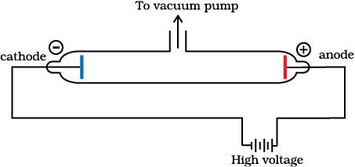
Fig. 2.1(a) A cathode ray discharge tube
The flow of current from cathode to anode was further checked by making a hole in the anode and coating the tube behind anode with phosphorescent material zinc sulphide. When these rays, after passing through anode, strike the zinc sulphide coating, a bright spot on the coating is developed(same thing happens in a television set) [Fig. 2.1(b)].

Fig. 2.1(b) A cathode ray discharge tube with perforated anode
(i) The cathode rays start from cathode and move towards the anode.
(ii) These rays themselves are not visible but their behaviour can be observed with the help of certain kind of materials (fluorescent or phosphorescent) which glow when hit by them. Television picture tubes are cathode ray tubes and television pictures result due to fluorescence on the television screen coated with certain fluorescent or phosphorescent materials.
(iii) In the absence of electrical or magnetic field, these rays travel in straight lines (Fig. 2.2).
(iv) In the presence of electrical or magnetic field, the behaviour of cathode rays are similar to that expected from negatively charged particles, suggesting that the cathode rays consist of negatively charged particles, called electrons.
(v) The characteristics of cathode rays (electrons) do not depend upon the material of electrodes and the nature of the gas present in the cathode ray tube.
Thus, we can conclude that electrons are basic constituent of all the atoms.
2.1.2 Charge to Mass Ratio of Electron
In 1897, British physicist J.J. Thomson measured the ratio of electrical charge (e) to the mass of electron (me ) by using cathode ray tube and applying electrical and magnetic field perpendicular to each other as well as to the path of electrons (Fig. 2.2). Thomson argued that the amount of deviation of the particles from their path in the presence of electrical or magnetic field depends upon:
(i) the magnitude of the negative charge on the particle, greater the magnitude of the charge on the particle, greater is the interaction with the electric or magnetic field and thus greater is the deflection.
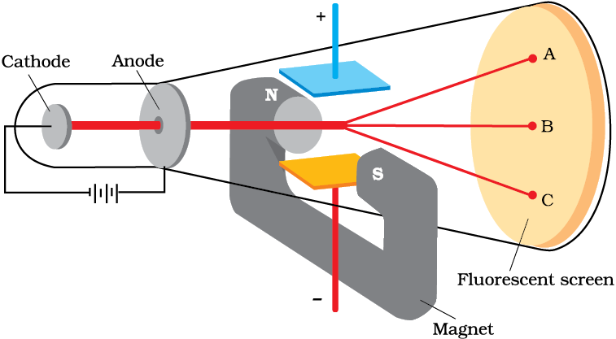
Fig. 2.2 The apparatus to determine the charge to the mass ratio of electron
(iii) the strength of the electrical or magnetic field — the deflection of electrons from its original path increases with the increase in the voltage across the electrodes, or the strength of the magnetic field.
When only electric field is applied, the electrons deviate from their path and hit the cathode ray tube at point A. Similarly when only magnetic field is applied, electron strikes the cathode ray tube at point C. By carefully balancing the electrical and magnetic field strength, it is possible to bring back the electron to the path followed as in the absence of electric or magnetic field and they hit the screen at point B. By carrying out accurate measurements on the amount of deflections observed by the electrons on the electric field strength or magnetic field strength, Thomson was able to determine the value of e/me as:
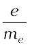 = 1.758820 × 1011 C kg–1 (2.1)
Where me is the mass of the electron in kg and e is the magnitude of the charge on the electron in coulomb (C). Since electrons
are negatively charged, the charge on electron is –e.
2.1.3 Charge on the Electron
R.A. Millikan (1868-1953) devised a method known as oil drop experiment (1906-14), to determine the charge on the electrons. He found that the charge on the electron to be – 1.6 × 10–19 C. The present accepted value of electrical charge is – 1.6022 × 10–19 C. The mass of the electron (me) was determined by combining these results with Thomson’s value of e/me ratio.
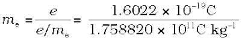
= 9.1094×10–31 kg (2.2)
2.1.4 Discovery of Protons and Neutrons
Electrical discharge carried out in the modified cathode ray tube led to the discovery of particles carrying positive charge, also known as canal rays. The characteristics of these positively charged particles are listed below.
(i) unlike cathode rays, the positively charged particles depend upon the nature of gas present in the cathode ray tube. These are simply the positively charged gaseous ions.
(ii) The charge to mass ratio of the particles is found to depend on the gas from which these originate.
(iii) Some of the positively charged particles carry a multiple of the fundamental unit of electrical charge.
(iv) The behaviour of these particles in the magnetic or electrical field is opposite to that observed for electron or cathode rays.
The smallest and lightest positive ion was obtained from hydrogen and was called proton. This positively charged particle was characterised in 1919. Later, a need was felt for the presence of electrically neutral particle as one of the constituent of atom. These particles were discovered by Chadwick (1932) by bombarding a thin sheet of beryllium by α-particles. When electrically neutral particles having a mass slightly greater than that of the protons was emitted. He named these particles as neutrons. The important properties of these fundamental particles are given in Table 2.1.
Millikan’s Oil Drop Method
In this method, oil droplets in the form of mist, produced by the atomiser, were allowed to enter through a tiny hole in the upper plate of electrical condenser. The downward motion of these droplets was viewed through the telescope, equipped with a micrometer eye piece. By measuring the rate of fall of these droplets, Millikan was able to measure the mass of oil droplets.The air inside the chamber was ionized by passing a beam of X-rays through it. The electrical charge on these oil droplets was acquired by collisions with gaseous ions. The fall of these charged oil droplets can be retarded, accelerated or made stationary depending upon the charge on the droplets and the polarity and strength of the voltage applied to the plate. By carefully measuring the effects of electrical field strength on the motion of oil droplets, Millikan concluded that the magnitude of electrical charge, q, on the droplets is always an integral multiple of the electrical charge, e, that is, q = n e, where n = 1, 2, 3... .
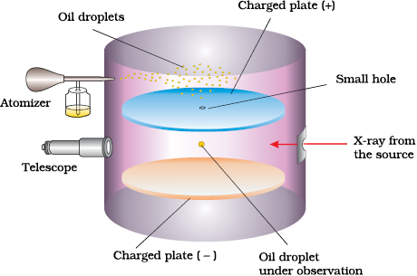
Fig. 2.3 The Millikan oil drop apparatus for measuring charge ‘e’. In chamber, the forces acting on oil drop are: gravitational, electrostatic due to electrical field and a viscous drag force when the oil drop is moving.
Table 2.1 Properties of Fundamental Particles
2.2 Atomic Models
Observations obtained from the experiments mentioned in the previous sections have suggested that Dalton’s indivisible atom is composed of sub-atomic particles carrying positive and negative charges. Different atomic models were proposed to explain the distributions of these charged particles in an atom. Although some of these models were not able to explain the stability of atoms, two of these models, proposed by J. J. Thomson and Ernest Rutherford are discussed below.
2.2.1 Thomson Model of Atom
J. J. Thomson, in 1898, proposed that an atom possesses a spherical shape (radius approximately 10–10 m) in which the positive charge is uniformly distributed. The electrons are embedded into it in such a manner as to give the most stable electrostatic arrangement (Fig. 2.4). Many different names are given to this model, for example, plum pudding, raisin pudding or watermelon. This model can be visualised as a pudding or watermelon of positive charge with plums or seeds (electrons) embedded into it.
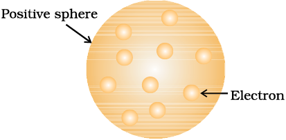
Fig.2.4 Thomson model of atom
An important feature of this model is that the mass of the atom is assumed to be uniformly distributed over the atom. Although this model was able to explain the overall neutrality of the atom, but was not consistent with the results of later experiments. Thomson was awarded Nobel Prize for physics in 1906, for his theoretical and experimental investigations on the conduction of electricity by gases.
In the later half of the nineteenth century different kinds of rays were discovered, besides those mentioned earlier. Wilhalm Röentgen (1845-1923) in 1895 showed that when electrons strike a material in the cathode ray tubes, produce rays which can cause fluorescence in the fluorescent materials placed outside the cathode ray tubes. Since Röentgen did not know the nature of the radiation, he named them X-rays and the name is still carried on. It was noticed that X-rays are produced effectively when electrons strike the dense metal anode, called targets. These are not deflected by the electric and magnetic fields and have a very high penetrating power through the matter and that is the reason that these rays are used to study the interior of the objects. These rays are of very short wavelengths (∼0.1 nm) and possess electro-magnetic character (Section 2.3.1).
Henri Becqueral (1852-1908) observed that there are certain elements which emit radiation on their own and named this phenomenon as radioactivity and the elements known as radioactive elements. This field was developed by Marie Curie, Piere Curie, Rutherford and Fredrick Soddy. It was observed that three kinds of rays i.e., α, β- and γ-rays are emitted. Rutherford found that α-rays consists of high energy particles carrying two units of positive charge and four unit of atomic mass. He concluded that α- particles are helium nuclei as when α- particles combined with two electrons yielded helium gas. β-rays are negatively charged particles similar to electrons. The γ-rays are high energy radiations like X-rays, are neutral in nature and do not consist of particles. As regards penetrating power, α-particles are the least, followed by β-rays (100 times that of α–particles) and γ-rays (1000 times of that α-particles).
2.2.2 Rutherford’s Nuclear Model of Atom
Rutherford and his students (Hans Geiger and Ernest Marsden) bombarded very thin gold foil with α–particles. Rutherford’s famous α–particle scattering experiment is represented in Fig. 2.5. A stream of high energy α–particles from a radioactive source was directed at a thin foil (thickness ∼ 100 nm) of gold metal.
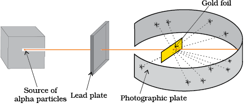
A. Rutherford’s scattering experiment
B. Schematic molecular view of the gold foil
Fig.2.5 Schematic view of Rutherford’s scattering experiment. When a beam of alpha (α) particles is “shot” at a thin gold foil, most of them pass through without much effect. Some, however, are deflected.
The thin gold foil had a circular fluorescent zinc sulphide screen around it. Whenever α–particles struck the screen, a tiny flash of light was produced at that point.
The results of scattering experiment were quite unexpected. According to Thomson model of atom, the mass of each gold atom in the foil should have been spread evenly over the entire atom, and α– particles had enough energy to pass directly through such a uniform distribution of mass. It was expected that the particles would slow down and change directions only by a small angles as they passed through the foil. It was observed that :
(i) most of the α– particles passed through the gold foil undeflected.
(ii) a small fraction of the α–particles was deflected by small angles.
(iii) a very few α– particles (∼1 in 20,000) bounced back, that is, were deflected by nearly 180°.
On the basis of the observations, Rutherford drew the following conclusions regarding the structure of atom :
(i) Most of the space in the atom is empty as most of the α–particles passed through the foil undeflected.
(ii) A few positively charged α– particles were deflected. The deflection must be due to enormous repulsive force showing that the positive charge of the atom is not spread throughout the atom as Thomson had presumed. The positive charge has to be concentrated in a very small volume that repelled and deflected the positively charged α– particles.
(iii) Calculations by Rutherford showed that the volume occupied by the nucleus is negligibly small as compared to the total volume of the atom. The radius of the atom is about 10–10 m, while that of nucleus is 10–15 m. One can appreciate this difference in size by realising that if a cricket ball represents a nucleus, then the radius of atom would be about 5 km.
On the basis of above observations and conclusions, Rutherford proposed the nuclear model of atom (after the discovery of protons). According to this model :
(i) The positive charge and most of the mass of the atom was densely concentrated in extremely small region. This very small portion of the atom was called nucleus by Rutherford.
(ii) The nucleus is surrounded by electrons that move around the nucleus with a very high speed in circular paths called orbits. Thus, Rutherford’s model of atom resembles the solar system in which the nucleus plays the role of sun and the electrons that of revolving planets.
(iii) Electrons and the nucleus are held together by electrostatic forces of attraction.
2.2.3 Atomic Number and Mass Number
The presence of positive charge on the nucleus is due to the protons in the nucleus. As established earlier, the charge on the proton is equal but opposite to that of electron. The number of protons present in the nucleus is equal to atomic number (Z ). For example, the number of protons in the hydrogen nucleus is 1, in sodium atom it is 11, therefore their atomic numbers are 1 and 11 respectively. In order to keep the electrical neutrality, the number of electrons in an atom is equal to the number of protons (atomic number, Z ). For example, number of electrons in hydrogen atom and sodium atom are 1 and 11 respectively.
Atomic number (Z) = number of protons in the nucleus of an atom = number of electrons in a nuetral atom (2.3)
While the positive charge of the nucleus is due to protons, the mass of the nucleus, due to protons and neutrons. As discussed earlier protons and neutrons present in the nucleus are collectively known as nucleons. The total number of nucleons is termed as mass number (A) of the atom.
mass number (A) = number of protons (Z) +
number of neutrons (n) (2.4)
2.2.4 Isobars and Isotopes
The composition of any atom can be represented by using the normal element symbol (X) with super-script on the left hand side as the atomic mass number (A) and subscript (Z) on the left hand side as the atomic number (i.e., AZX).
Isobars are the atoms with same mass number but different atomic number for example, 614C and 714N. On the other hand, atoms with identical atomic number but different atomic mass number are known as Isotopes. In other words (according to equation 2.4), it is evident that difference between the isotopes is due to the presence of different number of neutrons present in the nucleus. For example, considering of hydrogen atom again, 99.985% of hydrogen atoms contain only one proton. This isotope is called protium (11H). Rest of the percentage of hydrogen atom contains two other isotopes, the one containing 1 proton and 1 neutron is called deuterium (12D, 0.015%) and the other one possessing 1 proton and 2 neutrons is called tritium (13T ). The latter isotope is found in trace amounts on the earth. Other examples of commonly occuring isotopes are: carbon atoms containing 6, 7 and 8 neutrons besides 6 protons (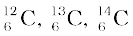); chlorine atoms containing 18 and 20 neutrons besides 17 protons (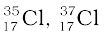).
Lastly an important point to mention regarding isotopes is that chemical properties of atoms are controlled by the number of electrons, which are determined by the number of protons in the nucleus. Number of neutrons present in the nucleus have very little effect on the chemical properties of an element. Therefore, all the isotopes of a given element show same chemical behaviour.
Problem 2.1
Calculate the number of protons, neutrons and electrons in  .
.
Solution
In this case,  , Z = 35, A = 80, species is neutral
, Z = 35, A = 80, species is neutral
Number of protons = number of electrons = Z = 35
Number of neutrons = 80 – 35 = 45, (equation 2.4)
Problem 2.2
The number of electrons, protons and neutrons in a species are equal to 18, 16 and 16 respectively. Assign the proper symbol to the species.
Solution
The atomic number is equal to
number of protons = 16. The element is sulphur (S).
Atomic mass number = number of protons + number of neutrons
= 16 + 16 = 32
Species is not neutral as the number of protons is not equal to electrons. It is anion (negatively charged) with charge equal to excess electrons = 18 – 16 = 2. Symbol is 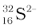.
Note : Before using the notation 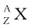, find out whether the species is a neutral atom, a cation or an anion. If it is a neutral atom, equation (2.3) is valid, i.e., number of protons = number of electrons = atomic number. If the species is an ion, determine whether the number of protons are larger (cation, positive ion) or smaller (anion, negative ion) than the number of electrons. Number of neutrons is always given by A–Z, whether the species is neutral or ion.
2.2.5 Drawbacks of Rutherford Model
Rutherford nuclear model of an atom is like a small scale solar system with the nucleus playing the role of the massive sun and the electrons being similar to the lighter planets. Further, the coulomb force (kq1q2/r2 where q1 and q2 are the charges, r is the distance of separation of the charges and k is the proportionality constant) between electron and the nucleus is mathematically similar to the gravitational force 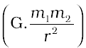 where m1 and m2 are the masses, r is the distance of separation of the masses and G is the gravitational constant. When classical mechanics* is applied to the solar system, it shows that the planets describe well-defined orbits around the sun. The theory can also calculate precisely the planetary orbits and these are in agreement with the experimental measurements. The similarity between the solar system and nuclear model suggests that electrons should move around the nucleus in well defined orbits. However, when a body is moving in an orbit, it undergoes acceleration (even if the body is moving with a constant speed in an orbit, it must accelerate because of changing direction). So an electron in the nuclear model describing planet like orbits is under acceleration. According to the electromagnetic theory of Maxwell, charged particles when accelerated should emit electromagnetic radiation (This feature does not exist for planets since they are uncharged). Therefore, an electron in an orbit will emit radiation, the energy carried by radiation comes from electronic motion. The orbit will thus continue to shrink. Calculations show that it should take an electron only 10–8 s to spiral into the nucleus. But this does not happen. Thus, the Rutherford model cannot explain the stability of an atom.
If the motion of an electron is described on the basis of the classical mechanics and electromagnetic theory, you may ask that since the motion of electrons in orbits is leading to the instability of the atom, then why not consider electrons as stationary around the nucleus. If the electrons were stationary, electrostatic attraction between the dense nucleus and the electrons would pull the electrons toward the nucleus to form a miniature version of Thomson’s model of atom.
* Classical mechanics is a theoretical science based on Newton’s laws of motion. It specifies the laws of motion of macroscopic objects.
Another serious drawback of the Rutherford model is that it says nothing about the electronic structure of atoms i.e., how the electrons are distributed around the nucleus and what are the energies of these electrons.
2.3 Developments Leading to the Bohr’s Model of Atom
Historically, results observed from the studies of interactions of radiations with matter have provided immense information regarding the structure of atoms and molecules. Neils Bohr utilised these results to improve upon the model proposed by Rutherford. Two developments played a major role in the formulation of Bohr’s model of atom. These were:
(i) Dual character of the electromagnetic radiation which means that radiations possess both wave like and particle like properties, and
(ii) Experimental results regarding atomic spectra which can be explained only by assuming quantized (Section 2.4) electronic energy levels in atoms.
2.3.1 Wave Nature of Electromagnetic Radiation
James Maxwell (1870) was the first to give a comprehensive explanation about the interaction between the charged bodies and the behaviour of electrical and magnetic fields on macroscopic level. He suggested that when electrically charged particle moves under accelaration, alternating electrical and magnetic fields are produced and transmitted. These fields are transmitted in the forms of waves called electromagnetic waves or electromagnetic radiation.
Light is the form of radiation known from early days and speculation about its nature dates back to remote ancient times. In earlier days (Newton) light was supposed to be made of particles (corpuscules). It was only in the 19th century when wave nature of light was established.
Maxwell was again the first to reveal that light waves are associated with oscillating electric and magnetic character (Fig. 2.6). Although electromagnetic wave motion is complex in nature, we will consider here only a few simple properties.
(i) The oscillating electric and magnetic fields produced by oscillating charged particles are perpendicular to each other and both are perpendicular to the direction of propagation of the wave. Simplified picture of electromagnetic wave is shown in Fig. 2.6.
(ii) Unlike sound waves or water waves, electromagnetic waves do not require medium and can move in vacuum.
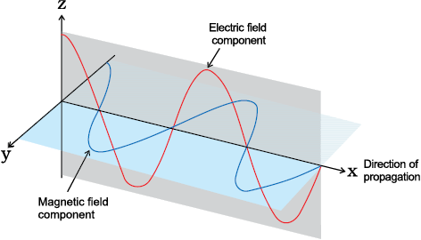
Fig.2.6 The electric and magnetic field components of an electromagnetic wave. These components have the same wavelength, frequency, speed and amplitude, but they vibrate in two mutually perpendicular planes.
(iii) It is now well established that there are many types of electromagnetic radiations, which differ from one another in wavelength (or frequency). These constitute what is called electromagnetic spectrum (Fig. 2.7). Different regions of the spectrum are identified by different names. Some examples are: radio frequency region around 106 Hz, used for broadcasting; microwave region around 1010 Hz used for radar; infrared region around 1013 Hz used for heating; ultraviolet region around 1016Hz a component of sun’s radiation. The small portion around 1015 Hz, is what is ordinarily called visible light. It is only this part which our eyes can see (or detect). Special instruments are required to detect non-visible radiation.
(iv) Different kinds of units are used to represent electromagnetic radiation.
These radiations are characterised by the properties, namely, frequency (ν ) and wavelength (λ).
The SI unit for frequency (ν ) is hertz
(Hz, s–1), after Heinrich Hertz. It is defined as the number of waves that pass a given point in one second.
Wavelength should have the units of length and as you know that the SI units of length is meter (m). Since electromagnetic radiation consists of different kinds of waves of much smaller wavelengths, smaller units are used. Fig.2.7 shows various types of electro-magnetic radiations which differ from one another in wavelengths and frequencies.
In vaccum all types of electromagnetic radiations, regardless of wavelength, travel at the same speed, i.e., 3.0 × 108 m s–1 (2.997925 × 108 m s–1, to be precise). This is called speed of light and is given the symbol ‘c‘. The frequency (ν ), wavelength (λ) and velocity of light (c) are related by the equation (2.5).
c = ν λ (2.5)
The other commonly used quantity specially in spectroscopy, is the wavenumber ( ). It is defined as the number of wavelengths per unit length. Its units are reciprocal of wavelength unit, i.e., m–1. However commonly used unit is cm–1 (not SI unit).
). It is defined as the number of wavelengths per unit length. Its units are reciprocal of wavelength unit, i.e., m–1. However commonly used unit is cm–1 (not SI unit).
(a)
(b)
Fig. 2.7 (a) The spectrum of electromagnetic radiation. (b) Visible spectrum. The visible region is only a small part of the entire spectrum .
Problem 2.3
The Vividh Bharati station of All India Radio, Delhi, broadcasts on a frequency of 1,368 kHz (kilo hertz). Calculate the wavelength of the electromagnetic radiation emitted by transmitter. Which part of the electromagnetic spectrum does it belong to?
Solution
The wavelength, λ, is equal to c/ν , where c is the speed of electromagnetic radiation in vacuum and ν is the frequency. Substituting the given values, we have
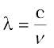
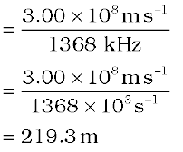
This is a characteristic radiowave wavelength.
Problem 2.4
The wavelength range of the visible spectrum extends from violet (400 nm) to red (750 nm). Express these wavelengths in frequencies (Hz). (1nm = 10–9 m)
Solution
Using equation 2.5, frequency of violet light
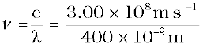
= 7.50 × 1014 Hz
Frequency of red light
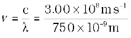 = 4.00 × 1014 Hz
The range of visible spectrum is from
4.0 × 1014 to 7.5 × 1014 Hz in terms of frequency units.
Problem 2.5
Calculate (a) wavenumber and (b) frequency of yellow radiation having wavelength 5800 Å.
Solution
(a) Calculation of wavenumber ( )
)
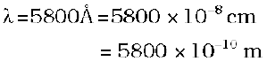

(b) Calculation of the frequency (ν )
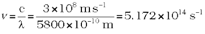
2.3.2 Particle Nature of Electromagnetic Radiation: Planck’s Quantum Theory
Some of the experimental phenomenon such as diffraction* and interference** can be explained by the wave nature of the electromagnetic radiation. However, following are some of the observations which could not be explained with the help of even the electromagentic theory of 19th century physics (known as classical physics):
(i) the nature of emission of radiation from hot bodies (black -body radiation)
(ii) ejection of electrons from metal surface when radiation strikes it (photoelectric effect)
(iii) variation of heat capacity of solids as a function of temperature
(iv) line spectra of atoms with special reference to hydrogen.
It is noteworthy that the first concrete explanation for the phenomenon of the black body radiation was given by Max Planck in 1900. This phenomenon is given below:
When solids are heated they emit radiation over a wide range of wavelengths. For example, when an iron rod is heated in a furnace, it first turns to dull red and then progressively becomes more and more red as the temperature increases. As this is heated further, the radiation emitted becomes white and then becomes blue as the temperature becomes very high. In terms of frequency, it means that the frequency of emitted radiation goes from a lower frequency to a higher frequency as the temperature increases.
* Diffraction is the bending of wave around an obstacle.
** Interference is the combination of two waves of the same or different frequencies to give a wave whose distribution at each point in space is the algebraic or vector sum of disturbances at that point resulting from each interfering wave.
The red colour lies in the lower frequency region while blue colour belongs to the higher frequency region of the electromagnetic spectrum. The ideal body, which emits and absorbs radiations of all frequencies, is called a black body and the radiation emitted by such a body is called black body radiation. The exact frequency distribution of the emitted radiation (i.e., intensity versus frequency curve of the radiation) from a black body depends only on its temperature. At a given temperature, intensity of radiation emitted increases with decrease of wavelength, reaches a maximum value at a given wavelength and then starts decreasing with further decrease of wavelength, as shown in Fig. 2.8.
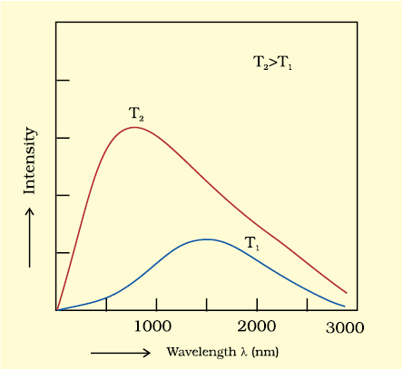
Fig. 2.8 Wavelength-intensity relationship
The above experimental results cannot be explained satisfactorily on the basis of the wave theory of light. Planck suggested that atoms and molecules could emit (or absorb) energy only in discrete quantities and not in a continuous manner, a belief popular at that time. Planck gave the name quantum to the smallest quantity of energy that can be emitted or absorbed in the form of electromagnetic radiation. The energy (E ) of a quantum of radiation is proportional to its frequency (ν ) and is expressed by equation (2.6).
E = hν (2.6)
The proportionality constant, ‘h’ is known as Planck’s constant and has the value 6.626×10–34 J s.
With this theory, Planck was able to explain the distribution of intensity in the radiation from black body as a function of frequency or wavelength at different temperatures.
Photoelectric Effect
In 1887, H. Hertz performed a very interesting experiment in which electrons (or electric current) were ejected when certain metals (for example potassium, rubidium, caesium etc.) were exposed to a beam of light as shown in Fig.2.9.
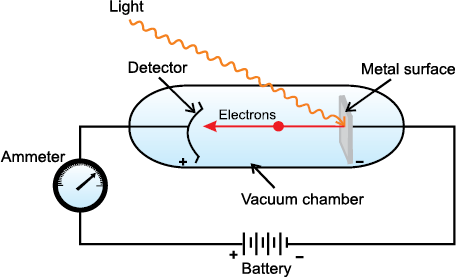
Fig.2.9 Equipment for studying the photoelectric effect. Light of a particular frequency strikes a clean metal surface inside a vacuum chamber. Electrons are ejected from the metal and are counted by a detector that measures their kinetic energy.

Max Planck
(1858 – 1947)
Max Planck, a German physicist, received his Ph.D in theoretical physics from the University of Munich in 1879. In 1888, he was appointed Director of the Institute of Theoretical Physics at the University of Berlin. Planck was awarded the Nobel Prize in Physics in 1918 for his quantum theory. Planck also made significant contributions in thermodynamics and other areas of physics.
The phenomenon is called Photoelectric effect. The results observed in this experiment were:
(i) The electrons are ejected from the metal surface as soon as the beam of light strikes the surface, i.e., there is no time lag between the striking of light beam and the ejection of electrons from the metal surface.
(ii) The number of electrons ejected is proportional to the intensity or brightness of light.
(iii) For each metal, there is a characteristic minimum frequency,ν0 (also known as threshold frequency) below which photoelectric effect is not observed. At a frequency ν >ν 0, the ejected electrons come out with certain kinetic energy. The kinetic energies of these electrons increase with the increase of frequency of the light used.
All the above results could not be explained on the basis of laws of classical physics. According to latter, the energy content of the beam of light depends upon the brightness of the light. In other words, number of electrons ejected and kinetic energy associated with them should depend on the brightness of light. It has been observed that though the number of electrons ejected does depend upon the brightness of light, the kinetic energy of the ejected electrons does not. For example, red light [ν = (4.3 to 4.6) × 1014 Hz] of any brightness (intensity) may shine on a piece of potassium metal for hours but no photoelectrons are ejected. But, as soon as even a very weak yellow light (ν = 5.1–5.2 × 1014 Hz) shines on the potassium metal, the photoelectric effect is observed. The threshold frequency (ν 0) for potassium metal is 5.0×1014 Hz.
Einstein (1905) was able to explain the photoelectric effect using Planck’s quantum theory of electromagnetic radiation as a starting point,
Albert Einstein
(1879 - 1955)
Albert Einstein, a German born American physicist, is regarded by many as one of the two great physicists the world has known (the other is Isaac Newton). His three research papers (on special relativity, Brownian motion and the photoelectric effect) which he published in 1905, while he was employed as a technical assistant in a Swiss patent office in Berne have profoundly influenced the development of physics. He received the Nobel Prize in Physics in 1921 for his explanation of the photoelectric effect.
Shining a beam of light on to a metal surface can, therefore, be viewed as shooting a beam of particles, the photons. When a photon of sufficient energy strikes an electron in the atom of the metal, it transfers its energy instantaneously to the electron during the collision and the electron is ejected without any time lag or delay. Greater the energy possessed by the photon, greater will be transfer of energy to the electron and greater the kinetic energy of the ejected electron. In other words, kinetic energy of the ejected electron is proportional to the frequency of the electromagnetic radiation. Since the striking photon has energy equal to hν and the minimum energy required to eject the electron is hν0 (also called work function, W0; Table 2.2), then the difference in energy (hν – hν0 ) is transferred as the kinetic energy of the photoelectron. Following the conservation of energy principle, the kinetic energy of the ejected electron is given by the equation 2.7.
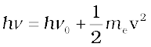 (2.7)
where me is the mass of the electron and v is the velocity associated with the ejected electron. Lastly, a more intense beam of light consists of larger number of photons, consequently the number of electrons ejected is also larger as compared to that in an experiment in which a beam of weaker intensity of light is employed.
Dual Behaviour of Electromagnetic Radiation
The particle nature of light posed a dilemma for scientists. On the one hand, it could explain the black body radiation and photoelectric effect satisfactorily but on the other hand, it was not consistent with the known wave behaviour of light which could account for the phenomena of interference and diffraction. The only way to resolve the dilemma was to accept the idea that light possesses both particle and wave-like properties, i.e., light has dual behaviour. Depending on the experiment, we find that light behaves either as a wave or as a stream of particles. Whenever radiation interacts with matter, it displays particle like properties in contrast to the wavelike properties (interference and diffraction), which it exhibits when it propagates. This concept was totally alien to the way the scientists thought about matter and radiation and it took them a long time to become convinced of its validity. It turns out, as you shall see later, that some microscopic particles like electrons also exhibit this wave-particle duality.
Table 2.2 Values of Work Function (W0) for a Few Metals
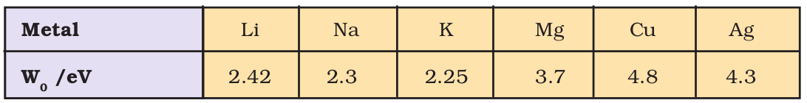
Problem 2.6
Calculate energy of one mole of photons of radiation whose frequency is 5 ×1014 Hz.
Solution
Energy (E) of one photon is given by the expression
E = hν
h = 6.626 ×10–34 J s
ν = 5×1014 s–1 (given)
E = (6.626 ×10–34 J s) × (5 ×1014 s–1)
= 3.313 ×10–19 J
Energy of one mole of photons
= (3.313 ×10–19 J) × (6.022 × 1023 mol–1)
= 199.51 kJ mol–1
Problem 2.7
A 100 watt bulb emits monochromatic light of wavelength 400 nm. Calculate the number of photons emitted per second by the bulb.
Solution
Power of the bulb = 100 watt
= 100 J s–1
Energy of one photon E = hν = hc/λ
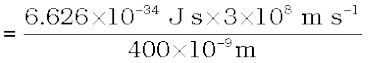
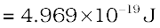
Number of photons emitted
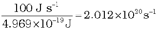
Problem 2.8
When electromagnetic radiation of wavelength 300 nm falls on the surface of sodium, electrons are emitted with a kinetic energy of 1.68 ×105 J mol–1. What is the minimum energy needed to remove an electron from sodium? What is the maximum wavelength that will cause a photoelectron to be emitted ?
Solution
The energy (E) of a 300 nm photon is given by 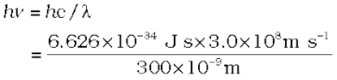
= 6.626 × 10-19 J
The energy of one mole of photons
= 6.626 ×10–19 J × 6.022 ×1023 mol–1
= 3.99 × 105 J mol–1
The minimum energy needed to remove one mole of electrons from sodium
= (3.99 –1.68) 105 J mol–1
= 2.31 × 105 J mol–1
The minimum energy for one electron
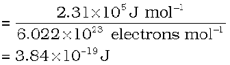
This corresponds to the wavelength
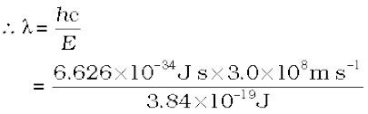
= 517 nm
(This corresponds to green light)
Problem 2.9
The threshold frequency ν0 for a metal is 7.0 ×1014 s–1. Calculate the kinetic energy of an electron emitted when radiation of frequency ν =1.0 ×1015 s–1 hits the metal.
Solution
According to Einstein’s equation
Kinetic energy = ½ mev2 = h(ν – ν0 )
= (6.626 ×10–34 J s) (1.0 × 1015 s–1 – 7.0 ×1014 s–1)
= (6.626 ×10–34 J s) (10.0 ×1014 s–1 – 7.0 ×1014 s–1)
= (6.626 ×10–34 J s) × (3.0 ×1014 s–1)
= 1.988 ×10–19 J
2.3.3 Evidence for the quantized* Electronic Energy Levels: Atomic spectra
The speed of light depends upon the nature of the medium through which it passes. As a result, the beam of light is deviated or refracted from its original path as it passes from one medium to another. It is observed that when a ray of white light is passed through a prism, the wave with shorter wavelength bends more than the one with a longer wavelength. Since ordinary white light consists of waves with all the wavelengths in the visible range, a ray of white light is spread out into a series of coloured bands called spectrum. The light of red colour which has longest wavelength is deviated the least while the violet light, which has shortest wavelength is deviated the most. The spectrum of white light, that we can see, ranges from violet at 7.50 × 1014 Hz to red at 4×1014 Hz. Such a spectrum is called continuous spectrum. Continuous because violet merges into blue, blue into green and so on. A similar spectrum is produced when a rainbow forms in the sky. Remember that visible light is just a small portion of the electromagnetic radiation (Fig.2.7). When electromagnetic radiation interacts with matter, atoms and molecules may absorb energy and reach to a higher energy state. With higher energy, these are in an unstable state. For returning to their normal (more stable, lower energy states) energy state, the atoms and molecules emit radiations in various regions of the electromagnetic spectrum.
* The restriction of any property to discrete values is called quantization.
Emission and Absorption Spectra
The spectrum of radiation emitted by a substance that has absorbed energy is called an emission spectrum. Atoms, molecules or ions that have absorbed radiation are said to be “excited”. To produce an emission spectrum, energy is supplied to a sample by heating it or irradiating it and the wavelength (or frequency) of the radiation emitted, as the sample gives up the absorbed energy, is recorded.
An absorption spectrum is like the photographic negative of an emission spectrum. A continuum of radiation is passed through a sample which absorbs radiation of certain wavelengths. The missing wavelength which corresponds to the radiation absorbed by the matter, leave dark spaces in the bright continuous spectrum.
The study of emission or absorption spectra is referred to as spectroscopy. The spectrum of the visible light, as discussed above, was continuous as all wavelengths (red to violet) of the visible light are represented in the spectra. The emission spectra of atoms in the gas phase, on the other hand, do not show a continuous spread of wavelength from red to violet, rather they emit light only at specific wavelengths with dark spaces between them. Such spectra are called line spectra or atomic spectra because the emitted radiation is identified by the appearance of bright lines in the spectra (Fig, 2.10)
Line emission spectra are of great interest in the study of electronic structure. Each element has a unique line emission spectrum. The characteristic lines in atomic spectra can be used in chemical analysis to identify unknown atoms in the same way as finger prints are used to identify people. The exact matching of lines of the emission spectrum of the atoms of a known element with the lines from an unknown sample quickly establishes the identity of the latter, German chemist, Robert Bunsen (1811-1899) was one of the first investigators to use line spectra to identify elements.
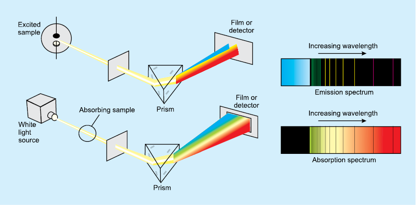
Fig. 2.10 (a) Atomic emission. The light emitted by a sample of excited hydrogen atoms (or any other element) can be passed through a prism and separated into certain discrete wavelengths. Thus an emission spectrum, which is a photographic recording of the separated wavelengths is called as line spectrum. Any sample of reasonable size contains an enormous number of atoms. Although a single atom can be in only one excited state at a time, the collection of atoms contains all possible excited states. The light emitted as these atoms fall to lower energy states is responsible for the spectrum. (b) Atomic absorption. When white light is passed through unexcited atomic hydrogen and then through a slit and prism, the transmitted light is lacking in intensity at the same wavelengths as are emitted in (a) The recorded absorption spectrum is also a line spectrum and the photographic negative of the emission spectrum.
Elements like rubidium (Rb), caesium (Cs) thallium (Tl), indium (In), gallium (Ga) and scandium (Sc) were discovered when their minerals were analysed by spectroscopic methods. The element helium (He) was discovered in the sun by spectroscopic method.
Line Spectrum of Hydrogen
When an electric discharge is passed through gaseous hydrogen, the H2 molecules dissociate and the energetically excited hydrogen atoms produced emit electromagnetic radiation of discrete frequencies. The hydrogen spectrum consists of several series of lines named after their discoverers. Balmer showed in 1885 on the basis of experimental observations that if spectral lines are expressed in terms of wavenumber ( ), then the visible lines of the hydrogen spectrum obey the following formula :
), then the visible lines of the hydrogen spectrum obey the following formula :
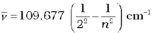 (2.8)
where n is an integer equal to or greater than 3 (i.e., n = 3,4,5,....)
The series of lines described by this formula are called the Balmer series. The Balmer series of lines are the only lines in the hydrogen spectrum which appear in the visible region of the electromagnetic spectrum. The Swedish spectroscopist, Johannes Rydberg, noted that all series of lines in the hydrogen spectrum could be described by the following expression :
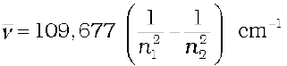 (2.9)
where n1=1,2........
n2 = n1 + 1, n1 + 2......
The value 109,677 cm–1 is called the Rydberg constant for hydrogen. The first five series of lines that correspond to n1 = 1, 2, 3, 4, 5 are known as Lyman, Balmer, Paschen, Bracket and Pfund series, respectively, Table 2.3 shows these series of transitions in the hydrogen spectrum. Fig 2.11 shows the Lyman, Balmer and Paschen series of transitions for hydrogen atom.
Of all the elements, hydrogen atom has the simplest line spectrum. Line spectrum becomes more and more complex for heavier atom. There are however certain features which are common to all line spectra, i.e., (i) line spectrum of element is unique and (ii) there is regularity in the line spectrum of each element. The questions which arise are : What are the reasons for these similarities? Is it something to do with the electronic structure of atoms? These are the questions need to be answered. We shall find later that the answers to these questions provide the key in understanding electronic structure of these elements.
2.4 Bohr’s Model for Hydrogen Atom
Neils Bohr (1913) was the first to explain quantitatively the general features of hydrogen atom structure and its spectrum. Though the theory is not the modern quantum mechanics, it can still be used to rationalize many points in the atomic structure and spectra. Bohr’s model for hydrogen atom is based on the following postulates:
i) The electron in the hydrogen atom can move around the nucleus in a circular path of fixed radius and energy. These paths are called orbits, stationary states or allowed energy states. These orbits are arranged concentrically around the nucleus.
ii) The energy of an electron in the orbit does not change with time. However, the electron will move from a lower stationary state to a higher stationary state when required amount of energy is absorbed by the electron or energy is emitted when electron moves from higher stationary state to lower stationary state (equation 2.16). The energy change does not take place in a continuous manner.
Table 2.3 The Spectral Lines for Atomic Hydrogen
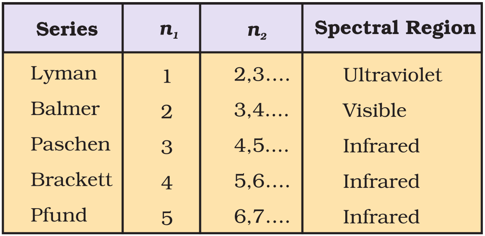
Fig. 2.11 Transitions of the electron in the hydrogen atom (The diagram shows the Lyman, Balmer and Paschen series of transitions)
Angular Momentum
Just as linear momentum is the product of mass (m) and linear velocity (v), angular momentum is the product of moment of inertia (I) and angular velocity (ω). For an electron of mass me, moving in a circular path of radius r around the nucleus,
angular momentum = I × ω
Since I = mer2 , and ω = v/r where v is the linear velocity,
angular momentum = mer2 × v/r = mevr
iii) The frequency of radiation absorbed or emitted when transition occurs between two stationary states that differ in energy by ∆E, is given by :
 (2.10)
(2.10)
Where E1 and E2 are the energies of the lower and higher allowed energy states respectively. This expression is commonly known as Bohr’s frequency rule.
Niels Bohr
(1885–1962)
Niels Bohr, a Danish physicist received his Ph.D. from the University of Copenhagen in 1911. He then spent a year with J.J. Thomson and Ernest Rutherford in England. In 1913, he returned to Copenhagen where he remained for the rest of his life. In 1920 he was named Director of the Institute of theoretical Physics. After first World War, Bohr worked energetically for peaceful uses of atomic energy. He received the first Atoms for Peace award in 1957. Bohr was awarded the Nobel Prize in Physics in 1922.
iv) The angular momentum of an electron in a given stationary state can be expressed as in equation (2.11)
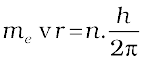 n = 1,2,3..... (2.11)
Thus an electron can move only in those orbits for which its angular momentum is integral multiple of h/2π that is why only certain fixed orbits are allowed.
The details regarding the derivation of energies of the stationary states used by Bohr, are quite complicated and will be discussed in higher classes. However, according to Bohr’s theory for hydrogen atom:
a) The stationary states for electron are numbered n = 1,2,3.......... These integral numbers (Section 2.6.2) are known as Principal quantum numbers.
b) The radii of the stationary states are expressed as :
rn = n2 a0 (2.12)
where a0 = 52,9 pm. Thus the radius of the first stationary state, called the Bohr orbit, is 52.9 pm. Normally the electron in the hydrogen atom is found in this orbit (that is n=1). As n increases the value of r will increase. In other words the electron will be present away from the nucleus.
c) The most important property associated with the electron, is the energy of its stationary state. It is given by the expression.
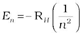 n = 1,2,3.... (2.13)
where RH is called Rydberg constant and its value is 2.18×10–18 J. The energy of the lowest state, also called as the ground state, is
E1 = –2.18×10–18 (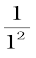) = –2.18×10–18 J. The energy of the stationary state for n = 2, will be : E2 = –2.18×10–18J (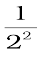)= –0.545×10–18 J. Fig. 2.11 depicts the energies of different stationary states or energy levels of hydrogen atom. This representation is called an energy level diagram.
What does the negative electronic energy (En) for hydrogen atom mean?
The energy of the electron in a hydrogen atom has a negative sign for all possible orbits (eq. 2.13). What does this negative sign convey? This negative sign means that the energy of the electron in the atom is lower than the energy of a free electron at rest. A free electron at rest is an electron that is infinitely far away from the nucleus and is assigned the energy value of zero. Mathematically, this corresponds to setting n equal to infinity in the equation (2.13) so that E∞=0. As the electron gets closer to the nucleus (as n decreases), En becomes larger in absolute value and more and more negative. The most negative energy value is given by n=1 which corresponds to the most stable orbit. We call this the ground state.
When the electron is free from the influence of nucleus, the energy is taken as zero. The electron in this situation is associated with the stationary state of Principal Quantum number = n = ∞ and is called as ionized hydrogen atom. When the electron is attracted by the nucleus and is present in orbit n, the energy is emitted and its energy is lowered. That is the reason for the presence of negative sign in equation (2.13) and depicts its stability relative to the reference state of zero energy and n = ∞.
d) Bohr’s theory can also be applied to the ions containing only one electron, similar to that present in hydrogen atom. For example, He+ Li2+, Be3+ and so on. The energies of the stationary states associated with these kinds of ions (also known as hydrogen like species) are given by the expression.
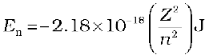 (2.14)
and radii by the expression
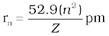 (2.15)
where Z is the atomic number and has values 2, 3 for the helium and lithium atoms respectively. From the above equations, it is evident that the value of energy becomes more negative and that of radius becomes smaller with increase of Z . This means that electron will be tightly bound to the nucleus.
e) It is also possible to calculate the velocities of electrons moving in these orbits. Although the precise equation is not given here, qualitatively the magnitude of velocity of electron increases with increase of positive charge on the nucleus and decreases with increase of principal quantum number.
2.4.1 Explanation of Line Spectrum of Hydrogen
Line spectrum observed in case of hydrogen atom, as mentioned in section 2.3.3, can be explained quantitatively using Bohr’s model. According to assumption 2, radiation (energy) is absorbed if the electron moves from the orbit of smaller Principal quantum number to the orbit of higher Principal quantum number, whereas the radiation (energy) is emitted if the electron moves from higher orbit to lower orbit. The energy gap between the two orbits is given by equation (2.16)
∆E = Ef – Ei (2.16)
Combining equations (2.13) and (2.16)
 (where ni and nf stand for initial orbit and final orbits)
(where ni and nf stand for initial orbit and final orbits)
∆E 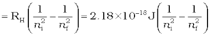
(2,17)
The frequency (ν ) associated with the absorption and emission of the photon can be evaluated by using equation (2.18)
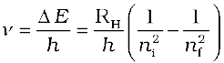
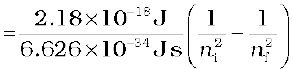 (2.18)
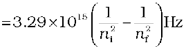 (2.19)
and in terms of wavenumbers (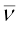)
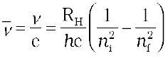 (2.20)
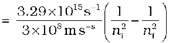
(2.21)
In case of absorption spectrum, nf > ni and the term in the parenthesis is positive and energy is absorbed. On the other hand in case of emission spectrum ni > nf , ∆ E is negative and energy is released.
The expression (2.17) is similar to that used by Rydberg (2.9) derived empirically using the experimental data available at that time. Further, each spectral line, whether in absorption or emission spectrum, can be associated to the particular transition in hydrogen atom. In case of large number of hydrogen atoms, different possible transitions can be observed and thus leading to large number of spectral lines. The brightness or intensity of spectral lines depends upon the number of photons of same wavelength or frequency absorbed or emitted.
Problem 2.10
What are the frequency and wavelength of a photon emitted during a transition from n = 5 state to the n = 2 state in the hydrogen atom?
Solution
Since ni = 5 and nf = 2, this transition gives rise to a spectral line in the visible region of the Balmer series. From equation (2.17)
It is an emission energy
The frequency of the photon (taking energy in terms of magnitude) is given by
= 6.91×1014 Hz
Problem 2.11
Calculate the energy associated with the first orbit of He+ . What is the radius of this orbit?
Solution
atom–1
For He+, n = 1, Z = 2
The radius of the orbit is given by equation (2.15)
Since n = 1, and Z = 2
2.4.2 Limitations of Bohr’s Model
Bohr’s model of the hydrogen atom was no doubt an improvement over Rutherford’s nuclear model, as it could account for the stability and line spectra of hydrogen atom and hydrogen like ions (for example, He+, Li2+, Be3+, and so on). However, Bohr’s model was too simple to account for the following points.
i) It fails to account for the finer details (doublet, that is two closely spaced lines) of the hydrogen atom spectrum observed by using sophisticated spectroscopic techniques. This model is also unable to explain the spectrum of atoms other than hydrogen, for example, helium atom which possesses only two electrons. Further, Bohr’s theory was also unable to explain the splitting of spectral lines in the presence of magnetic field (Zeeman effect) or an electric field (Stark effect).
ii) It could not explain the ability of atoms to form molecules by chemical bonds.
In other words, taking into account the points mentioned above, one needs a better theory which can explain the salient features of the structure of complex atoms.
2.5 Towards Quantum Mechanical Model of the Atom
In view of the shortcoming of the Bohr’s model, attempts were made to develop a more suitable and general model for atoms. Two important developments which contributed significantly in the formulation of such a model were :
1. Dual behaviour of matter,
2. Heisenberg uncertainty principle.
2.5.1 Dual Behaviour of Matter
The French physicist, de Broglie in 1924 proposed that matter, like radiation, should also exhibit dual behaviour i.e., both particle and wavelike properties. This means that just as the photon has momentum as well as wavelength, electrons should also have momentum as well as wavelength, de Broglie, from this analogy, gave the following relation between wavelength (λ) and momentum (p) of a material particle.
(2.22)
where m is the mass of the particle, v its velocity and p its momentum. de Broglie’s prediction was confirmed experimentally when it was found that an electron beam undergoes diffraction, a phenomenon characteristic of waves. This fact has been put to use in making an electron microscope, which is based on the wavelike behaviour of electrons just as an ordinary microscope utilises the wave nature of light. An electron microscope is a powerful tool in modern scientific research because it achieves a magnification of about 15 million times.
Louis de Broglie
(1892 – 1987)
Louis de Broglie, a French physicist, studied history as an undergraduate in the early 1910’s. His interest turned to science as a result of his assignment to radio communications in World War I. He received his Dr. Sc. from the University of Paris in 1924. He was professor of theoretical physics at the University of Paris from 1932 untill his retirement in 1962. He was awarded the Nobel Prize in Physics in 1929.
It needs to be noted that according to de Broglie, every object in motion has a wave character. The wavelengths associated with ordinary objects are so short (because of their large masses) that their wave properties cannot be detected. The wavelengths associated with electrons and other subatomic particles (with very small mass) can however be detected experimentally. Results obtained from the following problems prove these points qualitatively.
Problem 2.12
What will be the wavelength of a ball of mass 0.1 kg moving with a velocity of 10 m s–1 ?
Solution
According to de Brogile equation (2.22)
= 6.626×10–34 m (J = kg m2 s–2)
Problem 2.13
The mass of an electron is 9.1×10–31 kg. If its K.E. is 3.0×10–25 J, calculate its wavelength.
Solution
Since K. E. = ½ mv2
= 812 m s–1
= 8967 × 10–10 m = 896.7 nm
Problem 2.14
Calculate the mass of a photon with wavelength 3.6 Å.
Solution
Velocity of photon = velocity of light
= 6.135 × 10–29 kg
2.5.2 Heisenberg’s Uncertainty Principle
Werner Heisenberg a German physicist in 1927, stated uncertainty principle which is the consequence of dual behaviour of matter and radiation. It states that it is impossible to determine simultaneously, the exact position and exact momentum (or velocity) of an electron.
Mathematically, it can be given as in equation (2.23).
(2.23)
or
or
where ∆x is the uncertainty in position and ∆px ( or ∆vx) is the uncertainty in momentum (or velocity) of the particle. If the position of the electron is known with high degree of accuracy (∆x is small), then the velocity of the electron will be uncertain [∆(vx) is large]. On the other hand, if the velocity of the electron is known precisely (∆(vx) is small), then the position of the electron will be uncertain (∆x will be large). Thus, if we carry out some physical measurements on the electron’s position or velocity, the outcome will always depict a fuzzy or blur picture.
The uncertainty principle can be best understood with the help of an example. Suppose you are asked to measure the thickness of a sheet of paper with an unmarked metrestick. Obviously, the results obtained would be extremely inaccurate and meaningless, In order to obtain any accuracy, you should use an instrument graduated in units smaller than the thickness of a sheet of the paper. Analogously, in order to determine the position of an electron, we must use a meterstick calibrated in units of smaller than the dimensions of electron (keep in mind that an electron is considered as a point charge and is therefore, dimensionless). To observe an electron, we can illuminate it with “light” or electromagnetic radiation. The “light” used must have a wavelength smaller than the dimensions of an electron. The high momentum photons of such light would change the energy of electrons by collisions. In this process we, no doubt, would be able to calculate the position of the electron, but we would know very little about the velocity of the electron after the collision.
Significance of Uncertainty Principle
One of the important implications of the Heisenberg Uncertainty Principle is that it rules out existence of definite paths or trajectories of electrons and other similar particles. The trajectory of an object is determined by its location and velocity at various moments. If we know where a body is at a particular instant and if we also know its velocity and the forces acting on it at that instant, we can tell where the body would be sometime later. We, therefore, conclude that the position of an object and its velocity fix its trajectory. Since for a sub-atomic object such as an electron, it is not possible simultaneously to determine the position and velocity at any given instant to an arbitrary degree of precision, it is not possible to talk of the trajectory of an electron.
The effect of Heisenberg Uncertainty Principle is significant only for motion of microscopic objects and is negligible for that of macroscopic objects. This can be seen from the following examples.
If uncertainty principle is applied to an object of mass, say about a milligram (10–6 kg), then
The value of ∆v∆x obtained is extremely small and is insignificant. Therefore, one may say that in dealing with milligram-sized or heavier objects, the associated uncertainties are hardly of any real consequence.
In the case of a microscopic object like an electron on the other hand. ∆v.∆x obtained is much larger and such uncertainties are of real consequence. For example, for an electron whose mass is 9.11×10–31 kg., according to Heisenberg uncertainty principle
It, therefore, means that if one tries to find the exact location of the electron, say to an uncertainty of only 10–8 m, then the uncertainty ∆v in velocity would be
which is so large that the classical picture of electrons moving in Bohr’s orbits (fixed) cannot hold good. It, therefore, means that the precise statements of the position and momentum of electrons have to be replaced by the statements of probability, that the electron has at a given position and momentum. This is what happens in the quantum mechanical model of atom.
Werner Heisenberg
(1901 – 1976)
Max Werner Heisenberg (1901 – 1976) received his Ph.D. in physics from the University of Munich in 1923. He then spent a year working with Max Born at Gottingen and three years with Niels Bohr in Copenhagen. He was professor of physics at the University of Leipzig from 1927 to 1941. During World War II, Heisenberg was in charge of German research on the atomic bomb. After the war he was named director of Max Planck Institute for physics in Gottingen. He was also accomplished mountain climber. Heisenberg was awarded the Nobel Prize in Physics in 1932.
Problem 2.15
A microscope using suitable photons is employed to locate an electron in an atom within a distance of 0.1 Å. What is the uncertainty involved in the measurement of its velocity?
Solution
= 0.579×107 m s–1 (1J = 1 kg m2 s–2)
= 5.79×106 m s–1
Problem 2.16
A golf ball has a mass of 40g, and a speed of 45 m/s. If the speed can be measured within accuracy of 2%, calculate the uncertainty in the position.
Solution
The uncertainty in the speed is 2%, i.e.,
.
Using the equation (2.22)
= 1.46×10–33 m
This is nearly ~ 1018 times smaller than the diameter of a typical atomic nucleus. As mentioned earlier for large particles, the uncertainty principle sets no meaningful limit to the precision of measurements.
Reasons for the Failure of the Bohr Model
One can now understand the reasons for the failure of the Bohr model. In Bohr model, an electron is regarded as a charged particle moving in well defined circular orbits about the nucleus.
The wave character of the electron is not considered in Bohr model. Further, an orbit is a clearly defined path and this path can completely be defined only if both the position and the velocity of the electron are known exactly at the same time. This is not possible according to the Heisenberg uncertainty principle. Bohr model of the hydrogen atom, therefore, not only ignores dual behaviour of matter but also contradicts Heisenberg uncertainty principle. In view of these inherent weaknesses in the Bohr model, there was no point in extending Bohr model to other atoms. In fact an insight into the structure of the atom was needed which could account for wave-particle duality of matter and be consistent with Heisenberg uncertainty principle. This came with the advent of quantum mechanics.
2.6 Quantum Mechanical Model of Atom
Classical mechanics, based on Newton’s laws of motion, successfully describes the motion of all macroscopic objects such as a falling stone, orbiting planets etc., which have essentially a particle-like behaviour as shown in the previous section. However it fails when applied to microscopic objects like electrons, atoms, molecules etc. This is mainly because of the fact that classical mechanics ignores the concept of dual behaviour of matter especially for sub-atomic particles and the uncertainty principle. The branch of science that takes into account this dual behaviour of matter is called quantum mechanics.
Erwin Schrödinger, an Austrian physicist received his Ph.D. in theoretical physics from the University of Vienna in 1910. In 1927 Schrödinger succeeded Max Planck at the University of Berlin at Planck’s request. In 1933, Schrödinger left Berlin because of his opposition to Hitler and Nazi policies and returned to Austria in 1936. After the invasion of Austria by Germany, Schrödinger was forcibly removed from his professorship. He then moved to Dublin, Ireland where he remained for seventeen years. Schrödinger shared the Nobel Prize for Physics with P.A.M. Dirac in 1933.
Quantum mechanics is a theoretical science that deals with the study of the motions of the microscopic objects that have both observable wave like and particle like properties. It specifies the laws of motion that these objects obey. When quantum mechanics is applied to macroscopic objects (for which wave like properties are insignificant) the results are the same as those from the classical mechanics.
Quantum mechanics was developed independently in 1926 by Werner Heisenberg and Erwin Schrödinger. Here, however, we shall be discussing the quantum mechanics which is based on the ideas of wave motion. The fundamental equation of quantum mechanics was developed by Schrödinger and it won him the Nobel Prize in Physics in 1933. This equation which incorporates wave-particle duality of matter as proposed by de Broglie is quite complex and knowledge of higher mathematics is needed to solve it. You will learn its solutions for different systems in higher classes.
 ψ = Eψ where is a mathematical operator called Hamiltonian. Schrödinger gave a recipe of constructing this operator from the expression for the total energy of the system. The total energy of the system takes into account the kinetic energies of all the sub-atomic particles (electrons, nuclei), attractive potential between the electrons and nuclei and repulsive potential among the electrons and nuclei individually. Solution of this equation gives E and ψ.
ψ = Eψ where is a mathematical operator called Hamiltonian. Schrödinger gave a recipe of constructing this operator from the expression for the total energy of the system. The total energy of the system takes into account the kinetic energies of all the sub-atomic particles (electrons, nuclei), attractive potential between the electrons and nuclei and repulsive potential among the electrons and nuclei individually. Solution of this equation gives E and ψ.
Hydrogen Atom and the Schrödinger Equation
When Schrödinger equation is solved for hydrogen atom, the solution gives the possible energy levels the electron can occupy and the corresponding wave function(s) (ψ) of the electron associated with each energy level. These quantized energy states and corresponding wave functions which are characterized by a set of three quantum numbers (principal quantum number n, azimuthal quantum number l and magnetic quantum number ml ) arise as a natural consequence in the solution of the Schrödinger equation. When an electron is in any energy state, the wave function corresponding to that energy state contains all information about the electron. The wave function is a mathematical function whose value depends upon the coordinates of the electron in the atom and does not carry any physical meaning. Such wave functions of hydrogen or hydrogen like species with one electron are called atomic orbitals. Such wave functions pertaining to one-electron species are called one-electron systems. The probability of finding an electron at a point within an atom is proportional to the |ψ|2 at that point. The quantum mechanical results of the hydrogen atom successfully predict all aspects of the hydrogen atom spectrum including some phenomena that could not be explained by the Bohr model.
Application of Schrödinger equation to multi-electron atoms presents a difficulty: the Schrodinger equation cannot be solved exactly for a multi-electron atom. This difficulty can be overcome by using approximate methods. Such calculations with the aid of modern computers show that orbitals in atoms other than hydrogen do not differ in any radical way from the hydrogen orbitals discussed above. The principal difference lies in the consequence of increased nuclear charge. Because of this all the orbitals are somewhat contracted. Further, as you shall see later (in subsections 2.6.3 and 2.6.4), unlike orbitals of hydrogen or hydrogen like species, whose energies depend only on the quantum number n, the energies of the orbitals in multi-electron atoms depend on quantum numbers n and l.
Important Features of the Quantum Mechanical Model of Atom
Quantum mechanical model of atom is the picture of the structure of the atom, which emerges from the application of the Schrödinger equation to atoms. The following are the important features of the quantum-mechanical model of atom:
1. The energy of electrons in atoms is quantized (i.e., can only have certain specific values), for example when electrons are bound to the nucleus in atoms.
2. The existence of quantized electronic energy levels is a direct result of the wave like properties of electrons and are allowed solutions of Schrödinger wave equation.
3. Both the exact position and exact velocity of an electron in an atom cannot be determined simultaneously (Heisenberg uncertainty principle). The path of an electron in an atom therefore, can never be determined or known accurately. That is why, as you shall see later on, one talks of only probability of finding the electron at different points in an atom.
4. An atomic orbital is the wave function ψ for an electron in an atom. Whenever an electron is described by a wave function, we say that the electron occupies that orbital. Since many such wave functions are possible for an electron, there are many atomic orbitals in an atom. These “one electron orbital wave functions” or orbitals form the basis of the electronic structure of atoms. In each orbital, the electron has a definite energy. An orbital cannot contain more than two electrons. In a multi-electron atom, the electrons are filled in various orbitals in the order of increasing energy. For each electron of a multi-electron atom, there shall, therefore, be an orbital wave function characteristic of the orbital it occupies. All the information about the electron in an atom is stored in its orbital wave function ψ and quantum mechanics makes it possible to extract this information out of ψ.
5. The probability of finding an electron at a point within an atom is proportional to the square of the orbital wave function i.e., |ψ|2 at that point. |ψ|2 is known as probability density and is always positive. From the value of |ψ|2 at different points within an atom, it is possible to predict the region around the nucleus where electron will most probably be found.
2.6.1 Orbitals and Quantum Numbers
A large number of orbitals are possible in an atom. Qualitatively these orbitals can be distinguished by their size, shape and orientation. An orbital of smaller size means there is more chance of finding the electron near the nucleus. Similarly shape and orientation mean that there is more probability of finding the electron along certain directions than along others. Atomic orbitals are precisely distinguished by what are known as quantum numbers. Each orbital is designated by three quantum numbers labelled as n, l and ml.
The principal quantum number ‘n’ is a positive integer with value of n = 1,2,3....... . The principal quantum number determines the size and to large extent the energy of the orbital. For hydrogen atom and hydrogen like species (He+, Li2+, .... etc.) energy and size of the orbital depends only on ‘n’.
The principal quantum number also identifies the shell. With the increase in the value of ‘n’, the number of allowed orbital increases and are given by ‘n2’ All the orbitals of a given value of ‘n’ constitute a single shell of atom and are represented by the following letters
n = 1 2 3 4 ............
Shell = K L M N ............
Size of an orbital increases with increase of principal quantum number ‘n’. In other words the electron will be located away from the nucleus. Since energy is required in shifting away the negatively charged electron from the positively charged nucleus, the energy of the orbital will increase with increase of n.
Azimuthal quantum number. ‘l’ is also known as orbital angular momentum or subsidiary quantum number. It defines the three dimensional shape of the orbital. For a given value of n, l can have n values ranging from 0 to n – 1, that is, for a given value of n, the possible value of l are : l = 0, 1, 2, .......... (n–1)
For example, when n = 1, value of l is only 0. For n = 2, the possible value of l can be 0 and 1. For n = 3, the possible l values are 0, 1 and 2.
Each shell consists of one or more sub-shells or sub-levels. The number of sub-shells in a principal shell is equal to the value of n. For example in the first shell (n = 1), there is only one sub-shell which corresponds to l = 0. There are two sub-shells (l = 0, 1) in the second shell (n = 2), three (l = 0, 1, 2) in third shell (n = 3) and so on. Each sub-shell is assigned an azimuthal quantum number (l). Sub-shells corresponding to different values of l are represented by the following symbols.
Value for l : 0 1 2 3 4 5 ............
notation for s p d f g h ............
sub-shell
Table 2.4 shows the permissible values of ‘l ’ for a given principal quantum number and the corresponding sub-shell notation.
Table 2.4 Subshell Notations
Magnetic orbital quantum number. ‘ml’ gives information about the spatial orientation of the orbital with respect to standard set of co-ordinate axis. For any sub-shell (defined by ‘l’ value) 2l+1 values of ml are possible and these values are given by :
ml = – l, – (l–1), – (l–2)... 0,1... (l–2), (l–1), l
Thus for l = 0, the only permitted value of ml = 0, [2(0)+1 = 1, one s orbital]. For l = 1, ml can be –1, 0 and +1 [2(1)+1 = 3, three p orbitals]. For l = 2, ml = –2, –1, 0, +1 and +2, [2(2)+1 = 5, five d orbitals]. It should be noted that the values of ml are derived from l and that the value of l are derived from n.
Each orbital in an atom, therefore, is defined by a set of values for n, l and ml. An orbital described by the quantum numbers n = 2, l = 1, ml = 0 is an orbital in the p sub-shell of the second shell. The following chart gives the relation between the sub-shell and the number of orbitals associated with it.
Electron spin ‘s’ : The three quantum numbers labelling an atomic orbital can be used equally well to define its energy, shape and orientation. But all these quantum numbers are not enough to explain the line spectra observed in the case of multi-electron atoms, that is, some of the lines actually occur in doublets (two lines closely spaced), triplets (three lines, closely spaced) etc. This suggests the presence of a few more energy levels than predicted by the three quantum numbers.
Orbit, orbital and its importance
Orbit and orbital are not synonymous. An orbit, as proposed by Bohr, is a circular path around the nucleus in which an electron moves. A precise description of this path of the electron is impossible according to Heisenberg uncertainty principle. Bohr orbits, therefore, have no real meaning and their existence can never be demonstrated experimentally. An atomic orbital, on the other hand, is a quantum mechanical concept and refers to the one electron wave function ψ in an atom. It is characterized by three quantum numbers (n, l and ml) and its value depends upon the coordinates of the electron. ψ has, by itself, no physical meaning. It is the square of the wave function i.e., |ψ|2 which has a physical meaning. |ψ|2 at any point in an atom gives the value of probability density at that point. Probability density (|ψ|2) is the probability per unit volume and the product of |ψ|2 and a small volume (called a volume element) yields the probability of finding the electron in that volume (the reason for specifying a small volume element is that |ψ|2 varies from one region to another in space but its value can be assumed to be constant within a small volume element). The total probability of finding the electron in a given volume can then be calculated by the sum of all the products of |ψ|2 and the corresponding volume elements. It is thus possible to get the probable distribution of an electron in an orbital.
In 1925, George Uhlenbeck and Samuel Goudsmit proposed the presence of the fourth quantum number known as the electron spin quantum number (ms). An electron spins around its own axis, much in a similar way as earth spins around its own axis while revolving around the sun. In other words, an electron has, besides charge and mass, intrinsic spin angular quantum number. Spin angular momentum of the electron — a vector quantity, can have two orientations relative to the chosen axis. These two orientations are distinguished by the spin quantum numbers ms which can take the values of +½ or –½. These are called the two spin states of the electron and are normally represented by two arrows, ↑ (spin up) and ↓ (spin down). Two electrons that have different ms values (one +½ and the other –½) are said to have opposite spins. An orbital cannot hold more than two electrons and these two electrons should have opposite spins.
To sum up, the four quantum numbers provide the following information :
i) n defines the shell, determines the size of the orbital and also to a large extent the energy of the orbital.
ii) There are n subshells in the nth shell. l identifies the subshell and determines the shape of the orbital (see section 2.6.2). There are (2l+1) orbitals of each type in a subshell, that is, one s orbital (l = 0), three p orbitals (l = 1) and five d orbitals (l = 2) per subshell. To some extent l also determines the energy of the orbital in a multi-electron atom.
iii) ml designates the orientation of the orbital. For a given value of l, ml has (2l+1) values, the same as the number of orbitals per subshell. It means that the number of orbitals is equal to the number of ways in which they are oriented.
iv) ms refers to orientation of the spin of the electron.
Problem 2.17
What is the total number of orbitals associated with the principal quantum number n = 3 ?
Solution
For n = 3, the possible values of l are 0, 1 and 2. Thus there is one 3s orbital (n = 3, l = 0 and ml = 0); there are three 3p orbitals (n = 3, l = 1 and ml = –1, 0, +1); there are five 3d orbitals (n = 3, l = 2 and ml = –2, –1, 0, +1+, +2).
Therefore, the total number of orbitals is 1+3+5 = 9
The same value can also be obtained by using the relation; number of orbitals
= n2, i.e. 32 = 9.
Problem 2.18
Using s, p, d, f notations, describe the orbital with the following quantum numbers
(a) n = 2, l = 1, (b) n = 4, l = 0, (c) n = 5, l = 3, (d) n = 3, l = 2
Solution
| l | n | orbital | |
| a) | 2 | 1 | 2p |
| b) | 4 | 0 | 4s |
| c) | 5 | 3 | 5f |
| d) | 3 | 2 | 3d |
2.6.2 Shapes of Atomic Orbitals
The orbital wave function or ψ for an electron in an atom has no physical meaning. It is simply a mathematical function of the coordinates of the electron. However, for different orbitals the plots of corresponding wave functions as a function of r (the distance from the nucleus) are different. Fig. 2.12(a), (page 54) gives such plots for 1s (n = 1, l = 0) and 2s (n = 2, l = 0) orbitals.
According to the German physicist, Max Born, the square of the wave function (i.e.,ψ2) at a point gives the probability density of the electron at that point. The variation of ψ2 as a function of r for 1s and 2s orbitals is given in Fig. 2.12(b), (page 54). Here again, you may note that the curves for 1s and 2s orbitals are different.
It may be noted that for 1s orbital the probability density is maximum at the nucleus and it decreases sharply as we move away from it. On the other hand, for 2s orbital the probability density first decreases sharply to zero and again starts increasing. After reaching a small maxima it decreases again and approaches zero as the value of r increases further. The region where this probability density function reduces to zero is called nodal surfaces or simply nodes. In general, it has been found that ns-orbital has (n – 1) nodes, that is, number of nodes increases with increase of principal quantum number n. In other words, number of nodes for 2s orbital is one, two for 3s and so on.
Fig. 2.12 The plots of (a) the orbital wave function ψ(r ); (b) the variation of probability density ψ2(r) as a function of distance r of the electron from the nucleus for 1s and 2s orbitals.
These probability density variation can be visualised in terms of charge cloud diagrams [Fig. 2.13(a)]. In these diagrams, the density of the dots in a region represents electron probability density in that region.
Boundary surface diagrams of constant probability density for different orbitals give a fairly good representation of the shapes of the orbitals. In this representation, a boundary surface or contour surface is drawn in space for an orbital on which the value of probability density |ψ|2 is constant. In principle many such boundary surfaces may be possible. However, for a given orbital, only that boundary surface diagram of constant probability density* is taken to be good representation of the shape of the orbital which encloses a region or volume in which the probability of finding the electron is very high, say, 90%. The boundary surface diagram for 1s and 2s orbitals are given in Fig. 2.13(b).
Fig. 2.13 (a) Probability density plots of 1s and 2s atomic orbitals. The density of the dots represents the probability density of finding the electron in that region. (b) Boundary surface diagram for 1s and 2s orbitals.
One may ask a question : Why do we not draw a boundary surface diagram, which bounds a region in which the probability of finding the electron is, 100 %? The answer to this question is that the probability density |ψ|2 has always some value, howsoever small it may be, at any finite distance from the nucleus. It is therefore, not possible to draw a boundary surface diagram of a rigid size in which the probability of finding the electron is 100%. Boundary surface diagram for a s orbital is actually a sphere centred on the nucleus. In two dimensions, this sphere looks like a circle. It encloses a region in which probability of finding the electron is about 90%.
* If probability density |ψ|2 is constant on a given surface, |ψ| is also constant over the surface. The boundary surface for |ψ|2 and |ψ| are identical.
Thus we see that 1s and 2s orbitals are spherical in shape. In reality all the s-orbitals are spherically symmetric, that is, the probability of finding the electron at a given distance is equal in all the directions. It is also observed that the size of the s orbital increases with increase in n, that is, 4s > 3s > 2s > 1s and the electron is located further away from the nucleus as the principal quantum number increases.
Boundary surface diagrams for three 2p orbitals (l = 1) are shown in Fig. 2.14. In these diagrams, the nucleus is at the origin. Here, unlike s-orbitals, the boundary surface diagrams are not spherical. Instead each p orbital consists of two sections called lobes that are on either side of the plane that passes through the nucleus. The probability density function is zero on the plane where the two lobes touch each other. The size, shape and energy of the three orbitals are identical. They differ however, in the way the lobes are oriented. Since the lobes may be considered to lie along the x, y or z axis, they are given the designations 2px, 2py, and 2pz. It should be understood, however, that there is no simple relation between the values of ml (–1, 0 and +1) and the x, y and z directions. For our purpose, it is sufficient to remember that, because there are three possible values of ml, there are, therefore, three p orbitals whose axes are mutually perpendicular. Like s orbitals, p orbitals increase in size and energy with increase in the principal quantum number and hence the order of the energy and size of various p orbitals is 4p > 3p > 2p. Further, like s orbitals, the probability density functions for p-orbital also pass through value zero, besides at zero and infinite distance, as the distance from the nucleus increases. The number of nodes are given by the n –2, that is number of radial node is 1 for 3p orbital, two for 4p orbital and so on.
Fig. 2.14 Boundary surface diagrams of the three 2p orbitals.
For l = 2, the orbital is known as d-orbital and the minimum value of principal quantum number (n) has to be 3. as the value of lcannot be greater than n–1. There are five ml values (–2, –1, 0, +1 and +2) for l = 2 and thus there are five d orbitals. The boundary surface diagram of d orbitals are shown in Fig. 2.15, (page 56).
The five d-orbitals are designated as dxy, dyz, dxz, dx2–y2 and dz2. The shapes of the first four d-orbitals are similar to each other, where as that of the fifth one, dz2, is different from others, but all five 3d orbitals are equivalent in energy. The d orbitals for which nis greater than 3 (4d, 5d...) also have shapes similar to 3d orbital, but differ in energy and size.
Besides the radial nodes (i.e., probability density function is zero), the probability density functions for the np and nd orbitals are zero at the plane (s), passing through the nucleus (origin). For example, in case of pz orbital, xy-plane is a nodal plane, in case of dxy orbital, there are two nodal planes passing through the origin and bisecting the xy plane containing z-axis. These are called angular nodes and number of angular nodes are given by ‘l’, i.e., one angular node for p orbitals, two angular nodes for ‘d’ orbitals and so on. The total number of nodes are given by (n–1), i.e., sum of l angular nodes and (n – l – 1) radial nodes.
Fig. 2.15 Boundary surface diagrams of the five 3d orbitals.
2.6.3 Energies of Orbitals
The energy of an electron in a hydrogen atom is determined solely by the principal quantum number. Thus the energy of the orbitals increases as follows :
1s < 2s = 2p < 3s = 3p = 3d <4s = 4p = 4d = 4f < (2.23)
and is depicted in Fig. 2.16. Although the shapes of 2s and 2p orbitals are different, an electron has the same energy when it is in the 2s orbital as when it is present in 2p orbital. The orbitals having the same energy are called degenerate. The 1s orbital in a hydrogen atom, as said earlier, corresponds to the most stable condition and is called the ground state and an electron residing in this orbital is most strongly held by the nucleus. An electron in the 2s, 2p or higher orbitals in a hydrogen atom is in excited state.
Fig. 2.16 Energy level diagrams for the few electronic shells of (a) hydrogen atom and (b) multi-electronic atoms. Note that orbitals for the same value of principal quantum number, have the same energies even for different azimuthal quantum number for hydrogen atom. In case of multi-electron atoms, orbitals with same principal quantum number possess different energies for different azimuthal quantum numbers.
The energy of an electron in a multi-electron atom, unlike that of the hydrogen atom, depends not only on its principal quantum number (shell), but also on its azimuthal quantum number (subshell). That is, for a given principal quantum number, s, p, d, f ... all have different energies. The main reason for having different energies of the subshells is the mutual repulsion among the electrons in a multi-electron atoms. The only electrical interaction present in hydrogen atom is the attraction between the negatively charged electron and the positively charged nucleus. In multi-electron atoms, besides the presence of attraction between the electron and nucleus, there are repulsion terms between every electron and other electrons present in the atom. Thus the stability of an electron in multi-electron atom is because total attractive interactions are more than the repulsive interactions. In general, the repulsive interaction of the electrons in the outer shell with the electrons in the inner shell are more important. On the other hand, the attractive interactions of an electron increases with increase of positive charge (Ze) on the nucleus. Due to the presence of electrons in the inner shells, the electron in the outer shell will not experience the full positive charge of the nucleus (Ze). The effect will be lowered due to the partial screening of positive charge on the nucleus by the inner shell electrons. This is known as the shielding of the outer shell electrons from the nucleus by the inner shell electrons, and the net positive charge experienced by the outer electrons is known as effective nuclear charge (Zeff e). Despite the shielding of the outer electrons from the nucleus by the inner shell electrons, the attractive force experienced by the outer shell electrons increases with increase of nuclear charge. In other words, the energy of interaction between, the nucleus and electron (that is orbital energy) decreases (that is more negative) with the increase of atomic number (Z).
Both the attractive and repulsive interactions depend upon the shell and shape of the orbital in which the electron is present. For example electrons present in spherical shaped, s orbital shields the outer electrons from the nucleus more effectively as compared to electrons present in p orbital. Similarly electrons present in p orbitals shield the outer electrons from the nucleus more than the electrons present in d orbitals, even though all these orbitals are present in the same shell. Further within a shell, due to spherical shape of s orbital, the s orbital electron spends more time close to the nucleus in comparison to p orbital electron which spends more time in the vicinity of nucleus in comparison to d orbital electron. In other words, for a given shell (principal quantum number), the Zeff experienced by the electron decreases with increase of azimuthal quantum number (l), that is, the s orbital electron will be more tightly bound to the nucleus than p orbital electron which in turn will be better tightly bound than the d orbital electron. The energy of electrons in s orbital will be lower (more negative) than that of p orbital electron which will have less energy than that of d orbital electron and so on. Since the extent of shielding from the nucleus is different for electrons in different orbitals, it leads to the splitting of energy levels within the same shell (or same principal quantum number), that is, energy of electron in an orbital, as mentioned earlier, depends upon the values of n and l. Mathematically, the dependence of energies of the orbitals on n and l are quite complicated but one simple rule is that, the lower the value of (n + l) for an orbital, the lower is its energy. If two orbitals have the same value of (n + l), the orbital with lower value of n will have the lower energy. The Table 2.5 (page 58) illustrates the (n + l ) rule and Fig. 2.16 depicts the energy levels of multi-electrons atoms. It may be noted that different subshells of a particular shell have different energies in case of multi–electrons atoms. However, in hydrogen atom, these have the same energy. Lastly it may be mentioned here that energies of the orbitals in the same subshell decrease with increase in the atomic number (Zeff). For example, energy of 2s orbital of hydrogen atom is greater than that of 2s orbital of lithium and that of lithium is greater than that of sodium and so on, that is, E2s(H) > E2s(Li) > E2s(Na) > E2s(K).
2.6.4 Filling of Orbitals in Atom
The filling of electrons into the orbitals of different atoms takes place according to the aufbau principle which is based on the Pauli’s exclusion principle, the Hund’s rule of maximum multiplicity and the relative energies of the orbitals.
Aufbau Principle
The word ‘aufbau’ in German means ‘building up’. The building up of orbitals means the filling up of orbitals with electrons. The principle states : In the ground state of the atoms, the orbitals are filled in order of their increasing energies. In other words, electrons first occupy the lowest energy orbital available to them and enter into higher energy orbitals only after the lower energy orbitals are filled.
Table 2.5 Arrangement of Orbitals with Increasing Energy on the Basis of (n+l) Rule

The order in which the energies of the orbitals increase and hence the order in which the orbitals are filled is as follows :
1s, 2s, 2p, 3s, 3p, 4s, 3d, 4p, 5s, 4d, 5p, 4f, 5d, 6p, 7s...
The order may be remembered by using the method given in Fig. 2.17. Starting from the top, the direction of the arrows gives the order of filling of orbitals, that is starting from right top to bottom left.
Fig.2.17 Order of filling of orbitals
Pauli Exclusion Principle
The number of electrons to be filled in various orbitals is restricted by the exclusion principle, given by the Austrian scientist Wolfgang Pauli (1926). According to this principle : No two electrons in an atom can have the same set of four quantum numbers. Pauli exclusion principle can also be stated as : “Only two electrons may exist in the same orbital and these electrons must have opposite spin.” This means that the two electrons can have the same value of three quantum numbers n, l and ml, but must have the opposite spin quantum number. The restriction imposed by Pauli’s exclusion principle on the number of electrons in an orbital helps in calculating the capacity of electrons to be present in any subshell. For example, subshell 1s comprises of one orbital and thus the maximum number of electrons present in 1s subshell can be two, in p and d subshells, the maximum number of electrons can be 6 and 10 and so on. This can be summed up as : the maximum number of electrons in the shell with principal quantum number n is equal to 2n2.
Hund’s Rule of Maximum Multiplicity
This rule deals with the filling of electrons into the orbitals belonging to the same subshell (that is, orbitals of equal energy, called degenerate orbitals). It states : pairing of electrons in the orbitals belonging to the same subshell (p, d or f) does not take place until each orbital belonging to that subshell has got one electron each i.e., it is singly occupied.
Since there are three p, five d and seven f orbitals, therefore, the pairing of electrons will start in the p, d and f orbitals with the entry of 4th, 6th and 8th electron, respectively. It has been observed that half filled and fully filled degenerate set of orbitals acquire extra stability due to their symmetry (see Section, 2.6.7).
2.6.5 Electronic Configuration of Atoms
The distribution of electrons into orbitals of an atom is called its electronic configuration. If one keeps in mind the basic rules which govern the filling of different atomic orbitals, the electronic configurations of different atoms can be written very easily.
The electronic configuration of different atoms can be represented in two ways. For
example :
(i) sa pbdc ...... notation
(ii) Orbital diagram
In the first notation, the subshell is represented by the respective letter symbol and the number of electrons present in the subshell is depicted, as the super script, like a, b, c, ... etc. The similar subshell represented for different shells is differentiated by writing the principal quantum number before the respective subshell. In the second notation each orbital of the subshell is represented by a box and the electron is represented by an arrow (↑) a positive spin or an arrow (↓) a negative spin. The advantage of second notation over the first is that it represents all the four quantum numbers.
The hydrogen atom has only one electron which goes in the orbital with the lowest energy, namely 1s. The electronic configuration of the hydrogen atom is 1s1 meaning that it has one electron in the 1s orbital. The second electron in helium (He) can also occupy the 1s orbital. Its configuration is, therefore, 1s2. As mentioned above, the two electrons differ from each other with opposite spin, as can be seen from the orbital diagram.
The third electron of lithium (Li) is not allowed in the 1s orbital because of Pauli exclusion principle. It, therefore, takes the next available choice, namely the 2s orbital. The electronic configuration of Li is 1s22s1. The 2s orbital can accommodate one more electron. The configuration of beryllium (Be) atom is, therefore, 1s2 2s2 (see Table 2.6, page 62 for the electronic configurations of elements).
In the next six elements-boron (B, 1s22s22p1), carbon (C, 1s22s22p2), nitrogen (N, 1s22s22p3), oxygen (O, 1s22s22p4), fluorine (F, 1s22s22p5) and neon (Ne, 1s22s22p6), the 2p orbitals get progressively filled. This process is completed with the neon atom. The orbital picture of these elements can be represented as follows :
The electronic configuration of the elements sodium (Na, 1s22s22p63s1) to argon (Ar,1s22s22p63s23p6), follow exactly the same pattern as the elements from lithium to neon with the difference that the 3s and 3p orbitals are getting filled now. This process can be simplified if we represent the total number of electrons in the first two shells by the name of element neon (Ne). The electronic configuration of the elements from sodium to argon can be written as (Na, [Ne]3s1) to (Ar, [Ne] 3s23p6). The electrons in the completely filled shells are known as core electrons and the electrons that are added to the electronic shell with the highest principal quantum number are called valence electrons. For example, the electrons in Ne are the core electrons and the electrons from Na to Ar are the valence electrons. In potassium (K) and calcium (Ca), the 4s orbital, being lower in energy than the 3d orbitals, is occupied by one and two electrons respectively.
A new pattern is followed beginning with scandium (Sc). The 3d orbital, being lower in energy than the 4p orbital, is filled first. Consequently, in the next ten elements, scandium (Sc), titanium (Ti), vanadium (V), chromium (Cr), manganese (Mn), iron (Fe), cobalt (Co), nickel (Ni), copper (Cu) and zinc (Zn), the five 3d orbitals are progressively occupied. We may be puzzled by the fact that chromium and copper have five and ten electrons in 3d orbitals rather than four and nine as their position would have indicated with two-electrons in the 4s orbital. The reason is that fully filled orbitals and half-filled orbitals have extra stability (that is, lower energy). Thus p3, p6, d5, d10, f7, f14 etc. configurations, which are either half-filled or fully filled, are more stable. Chromium and copper therefore adopt the d5 and d10 configuration (Section 2.6.7)[caution: exceptions do exist]
With the saturation of the 3d orbitals, the filling of the 4p orbital starts at gallium (Ga) and is complete at krypton (Kr). In the next eighteen elements from rubidium (Rb) to xenon (Xe), the pattern of filling the 5s, 4d and 5p orbitals are similar to that of 4s, 3d and 4p orbitals as discussed above. Then comes the turn of the 6s orbital. In caesium (Cs) and the barium (Ba), this orbital contains one and two electrons, respectively. Then from lanthanum (La) to mercury (Hg), the filling up of electrons takes place in 4f and 5d orbitals. After this, filling of 6p, then 7s and finally 5f and 6d orbitals takes place. The elements after uranium (U) are all short-lived and all of them are produced artificially. The electronic configurations of the known elements (as determined by spectroscopic methods) are tabulated in Table 2.6.
One may ask what is the utility of knowing the electron configuration? The modern approach to the chemistry, infact, depends almost entirely on electronic distribution to understand and explain chemical behaviour. For example, questions like why two or more atoms combine to form molecules, why some elements are metals while others are non-metals, why elements like helium and argon are not reactive but elements like the halogens are reactive, find simple explanation from the electronic configuration. These questions have no answer in the Daltonian model of atom. A detailed understanding of the electronic structure of atom is, therefore, very essential for getting an insight into the various aspects of modern chemical knowledge.
2.6.6 Stability of Completely Filled and Half Filled Subshells
The ground state electronic configuration of the atom of an element always corresponds to the state of the lowest total electronic energy. The electronic configurations of most of the atoms follow the basic rules given in Section 2.6.5. However, in certain elements such as Cu, or Cr, where the two subshells (4s and 3d) differ slightly in their energies, an electron shifts from a subshell of lower energy (4s) to a subshell of higher energy (3d), provided such a shift results in all orbitals of the subshell of higher energy getting either completely filled or half filled. The valence electronic configurations of Cr and Cu, therefore, are 3d5 4s1 and 3d10 4s1 respectively and not 3d4 4s2 and 3d9 4s2. It has been found that there is extra stability associated with these electronic configurations.
Causes of Stability of Completely Filled and Half Filled Sub-shells
The completely filled and completely half filled sub-shells are stable due to the following reasons:
1.Symmetrical distribution of electrons: It is well known that symmetry leads to stability. The completely filled or half filled subshells have symmetrical distribution of electrons in them and are therefore more stable. Electrons in the same subshell (here 3d) have equal energy but different spatial distribution. Consequently, their shielding of one-another is relatively small and the electrons are more strongly attracted by the nucleus.
2. Exchange Energy : The stabilizing effect arises whenever two or more electrons with the same spin are present in the degenerate orbitals of a subshell. These electrons tend to exchange their positions and the energy released due to this exchange is called exchange energy. The number of exchanges that can take place is maximum when the subshell is either half filled or completely filled (Fig. 2.18). As a result the exchange energy is maximum and so is the stability.
You may note that the exchange energy is at the basis of Hund’s rule that electrons which enter orbitals of equal energy have parallel spins as far as possible. In other words, the extra stability of half-filled and completely filled subshell is due to: (i) relatively small shielding, (ii) smaller coulombic repulsion energy, and (iii) larger exchange energy. Details about the exchange energy will be dealt with in higher classes.

Fig. 2.18 Possible exchange for a d5 configuration
Table 2.6 Electronic Configurations of the Elements
* Elements with exceptional electronic configurations
** Elements with atomic number 112 and above have been reported but not yet fully authenticated and named.
SUMMARY
Atoms are the building blocks of elements. They are the smallest parts of an element that chemically react. The first atomic theory, proposed by John Dalton in 1808, regarded atom as the ultimate indivisible particle of matter. Towards the end of the nineteenth century, it was proved experimentally that atoms are divisible and consist of three fundamental particles: electrons, protons and neutrons. The discovery of sub-atomic particles led to the proposal of various atomic models to explain the structure of atom.
Thomson in 1898 proposed that an atom consists of uniform sphere of positive electricity with electrons embedded into it. This model in which mass of the atom is considered to be evenly spread over the atom was proved wrong by Rutherford’s famous alpha-particle scattering experiment in 1909. Rutherford concluded that atom is made of a tiny positively charged nucleus, at its centre with electrons revolving around it in circular orbits. Rutherford model, which resembles the solar system, was no doubt an improvement over Thomson model but it could not account for the stability of the atom i.e., why the electron does not fall into the nucleus. Further, it was also silent about the electronic structure of atoms i.e., about the distribution and relative energies of electrons around the nucleus. The difficulties of the Rutherford model were overcome by Niels Bohr in 1913 in his model of the hydrogen atom. Bohr postulated that electron moves around the nucleus in circular orbits. Only certain orbits can exist and each orbit corresponds to a specific energy. Bohr calculated the energy of electron in various orbits and for each orbit predicted the distance between the electron and nucleus. Bohr model, though offering a satisfactory model for explaining the spectra of the hydrogen atom, could not explain the spectra of multi-electron atoms. The reason for this was soon discovered. In Bohr model, an electron is regarded as a charged particle moving in a well defined circular orbit about the nucleus. The wave character of the electron is ignored in Bohr’s theory. An orbit is a clearly defined path and this path can completely be defined only if both the exact position and the exact velocity of the electron at the same time are known. This is not possible according to the Heisenberg uncertainty principle. Bohr model of the hydrogen atom, therefore, not only ignores the dual behaviour of electron but also contradicts Heisenberg uncertainty principle.
Erwin Schrödinger, in 1926, proposed an equation called Schrödinger equation to describe the electron distributions in space and the allowed energy levels in atoms. This equation incorporates de Broglie’s concept of wave-particle duality and is consistent with Heisenberg uncertainty principle. When Schrödinger equation is solved for the electron in a hydrogen atom, the solution gives the possible energy states the electron can occupy [and the corresponding wave function(s) (ψ) (which in fact are the mathematical functions) of the electron associated with each energy state]. These quantized energy states and corresponding wave functions which are characterized by a set of three quantum numbers (principal quantum number n, azimuthal quantum number l and magnetic quantum number ml) arise as a natural consequence in the solution of the Schrödinger equation. The restrictions on the values of these three quantum numbers also come naturally from this solution. The quantum mechanical model of the hydrogen atom successfully predicts all aspects of the hydrogen atom spectrum including some phenomena that could not be explained by the Bohr model.
According to the quantum mechanical model of the atom, the electron distribution of an atom containing a number of electrons is divided into shells. The shells, in turn, are thought to consist of one or more subshells and subshells are assumed to be composed of one or more orbitals, which the electrons occupy. While for hydrogen and hydrogen like systems (such as He+, Li2+ etc.) all the orbitals within a given shell have same energy, the energy of the orbitals in a multi-electron atom depends upon the values of n and l: The lower the value of (n + l ) for an orbital, the lower is its energy. If two orbitals have the same (n + l ) value, the orbital with lower value of n has the lower energy. In an atom many such orbitals are possible and electrons are filled in those orbitals in order of increasing energy in accordance with Pauli exclusion principle (no two electrons in an atom can have the same set of four quantum numbers) and Hund’s rule of maximum multiplicity (pairing of electrons in the orbitals belonging to the same subshell does not take place until each orbital belonging to that subshell has got one electron each, i.e., is singly occupied). This forms the basis of the electronic structure of atoms.
EXERCISES
2.1 (i) Calculate the number of electrons which will together weigh one gram.
(ii) Calculate the mass and charge of one mole of electrons.
2.2 (i) Calculate the total number of electrons present in one mole of methane.
(ii) Find (a) the total number and (b) the total mass of neutrons in 7 mg of 14C. (Assume that mass of a neutron = 1.675 × 10–27 kg).
(iii) Find (a) the total number and (b) the total mass of protons in 34 mg of NH3 at STP.
Will the answer change if the temperature and pressure are changed ?
2.3 How many neutrons and protons are there in the following nuclei ?
2.4 Write the complete symbol for the atom with the given atomic number (Z) and atomic mass (A)
(i) Z = 17 , A = 35.
(ii) Z = 92 , A = 233.
(iii) Z = 4 , A = 9.
2.5 Yellow light emitted from a sodium lamp has a wavelength (λ) of 580 nm. Calculate the frequency (ν) and wavenumber () of the yellow light.
2.6 Find energy of each of the photons which
(i) correspond to light of frequency 3×1015 Hz.
(ii) have wavelength of 0.50 Å.
2.7 Calculate the wavelength, frequency and wavenumber of a light wave whose period is 2.0 × 10–10 s.
2.8 What is the number of photons of light with a wavelength of 4000 pm that provide 1J of energy?
2.9 A photon of wavelength 4 × 10–7 m strikes on metal surface, the work function of the metal being 2.13 eV. Calculate (i) the energy of the photon (eV), (ii) the kinetic energy of the emission, and (iii) the velocity of the photoelectron
(1 eV= 1.6020 × 10–19 J).
2.10 Electromagnetic radiation of wavelength 242 nm is just sufficient to ionise the sodium atom. Calculate the ionisation energy of sodium in kJ mol–1.
2.11 A 25 watt bulb emits monochromatic yellow light of wavelength of 0.57µm. Calculate the rate of emission of quanta per second.
2.12 Electrons are emitted with zero velocity from a metal surface when it is exposed to radiation of wavelength 6800 Å. Calculate threshold frequency (ν0 ) and work function (W0 ) of the metal.
2.13 What is the wavelength of light emitted when the electron in a hydrogen atom undergoes transition from an energy level with n = 4 to an energy level with n = 2?
2.14 How much energy is required to ionise a H atom if the electron occupies n = 5 orbit? Compare your answer with the ionization enthalpy of H atom ( energy required to remove the electron from n =1 orbit).
2.15 What is the maximum number of emission lines when the excited electron of a H atom in n = 6 drops to the ground state?
2.16 (i) The energy associated with the first orbit in the hydrogen atom is –2.18 × 10–18 J atom–1. What is the energy associated with the fifth orbit?
(ii) Calculate the radius of Bohr’s fifth orbit for hydrogen atom.
2.17 Calculate the wavenumber for the longest wavelength transition in the Balmer series of atomic hydrogen.
2.18 What is the energy in joules, required to shift the electron of the hydrogen atom from the first Bohr orbit to the fifth Bohr orbit and what is the wavelength of the light emitted when the electron returns to the ground state? The ground state electron energy is –2.18 × 10–11 ergs.
2.19 The electron energy in hydrogen atom is given by En = (–2.18 × 10–18 )/n2 J. Calculate the energy required to remove an electron completely from the n = 2 orbit. What is the longest wavelength of light in cm that can be used to cause this transition?
2.20 Calculate the wavelength of an electron moving with a velocity of 2.05 × 107 m s–1.
2.21 The mass of an electron is 9.1 × 10–31 kg. If its K.E. is 3.0 × 10–25 J, calculate its wavelength.
2.22 Which of the following are isoelectronic species i.e., those having the same number of electrons?
Na+, K+, Mg2+, Ca2+, S2–, Ar.
2.23 (i) Write the electronic configurations of the following ions: (a) H– (b) Na+ (c) O2– (d) F–
(ii) What are the atomic numbers of elements whose outermost electrons are represented by (a) 3s1 (b) 2p3 and (c) 3p5 ?
(iii) Which atoms are indicated by the following configurations ?
(a) [He] 2s1 (b) [Ne] 3s2 3p3 (c) [Ar] 4s2 3d1.
2.24 What is the lowest value of n that allows g orbitals to exist?
2.25 An electron is in one of the 3d orbitals. Give the possible values of n, l and ml for this electron.
2.26 An atom of an element contains 29 electrons and 35 neutrons. Deduce (i) the number of protons and (ii) the electronic configuration of the element.
2.27 Give the number of electrons in the species
2.28 (i) An atomic orbital has n = 3. What are the possible values of l and ml ?
(ii) List the quantum numbers (ml and l ) of electrons for 3d orbital.
(iii) Which of the following orbitals are possible?
1p, 2s, 2p and 3f
2.29 Using s, p, d notations, describe the orbital with the following quantum numbers.
(a) n=1, l=0; (b) n = 3; l=1 (c) n = 4; l =2; (d) n=4; l=3.
2.30 Explain, giving reasons, which of the following sets of quantum numbers are not possible.
(a) n = 0, l = 0, ml = 0, ms = + ½
(b) n = 1, l = 0, ml = 0, ms = – ½
(c) n = 1, l = 1, ml = 0, ms = + ½
(d) n = 2, l = 1, ml = 0, ms = – ½
(e) n = 3, l = 3, ml = –3, ms = + ½
(f) n = 3, l = 1, ml = 0, ms = + ½
2.31 How many electrons in an atom may have the following quantum numbers?
(a) n = 4, ms = – ½ (b) n = 3, l = 0
2.32 Show that the circumference of the Bohr orbit for the hydrogen atom is an integral multiple of the de Broglie wavelength associated with the electron revolving around the orbit.
2.33 What transition in the hydrogen spectrum would have the same wavelength as the Balmer transition n = 4 to n = 2 of He+ spectrum ?
2.34 Calculate the energy required for the process
He+ (g) → He2+ (g) + e–
The ionization energy for the H atom in the ground state is 2.18 × 10–18 J atom–1
2.35 If the diameter of a carbon atom is 0.15 nm, calculate the number of carbon atoms which can be placed side by side in a straight line across length of scale of length 20 cm long.
2.36 2 ×108 atoms of carbon are arranged side by side. Calculate the radius of carbon atom if the length of this arrangement is 2.4 cm.
2.37 The diameter of zinc atom is 2.6 Å.Calculate (a) radius of zinc atom in pm and (b) number of atoms present in a length of 1.6 cm if the zinc atoms are arranged side by side lengthwise.
2.38 A certain particle carries 2.5 × 10–16C of static electric charge. Calculate the number of electrons present in it.
2.39 In Milikan’s experiment, static electric charge on the oil drops has been obtained by shining X-rays. If the static electric charge on the oil drop is –1.282 × 10–18C, calculate the number of electrons present on it.
2.40 In Rutherford’s experiment, generally the thin foil of heavy atoms, like gold, platinum etc. have been used to be bombarded by the α-particles. If the thin foil of light atoms like aluminium etc. is used, what difference would be observed from the above results ?
2.41 Symbols and 79Br can be written, whereas symbols and 35Br are not acceptable. Answer briefly.
2.42 An element with mass number 81 contains 31.7% more neutrons as compared to protons. Assign the atomic symbol.
2.43 An ion with mass number 37 possesses one unit of negative charge. If the ion conatins 11.1% more neutrons than the electrons, find the symbol of the ion.
2.44 An ion with mass number 56 contains 3 units of positive charge and 30.4% more neutrons than electrons. Assign the symbol to this ion.
2.45 Arrange the following type of radiations in increasing order of frequency: (a) radiation from microwave oven (b) amber light from traffic signal (c) radiation from FM radio (d) cosmic rays from outer space and (e) X-rays.
2.46 Nitrogen laser produces a radiation at a wavelength of 337.1 nm. If the number of photons emitted is 5.6 × 1024, calculate the power of this laser.
2.47 Neon gas is generally used in the sign boards. If it emits strongly at 616 nm, calculate (a) the frequency of emission, (b) distance traveled by this radiation in 30 s (c) energy of quantum and (d) number of quanta present if it produces 2 J of energy.
2.48 In astronomical observations, signals observed from the distant stars are generally weak. If the photon detector receives a total of 3.15 × 10–18 J from the radiations of 600 nm, calculate the number of photons received by the detector.
2.49 Lifetimes of the molecules in the excited states are often measured by using pulsed radiation source of duration nearly in the nano second range. If the radiation source has the duration of 2 ns and the number of photons emitted during the pulse source is 2.5 × 1015, calculate the energy of the source.
2.50 The longest wavelength doublet absorption transition is observed at 589 and 589.6 nm. Calcualte the frequency of each transition and energy difference between two excited states.
2.51 The work function for caesium atom is 1.9 eV. Calculate (a) the threshold wavelength and (b) the threshold frequency of the radiation. If the caesium element is irradiated with a wavelength 500 nm, calculate the kinetic energy and the velocity of the ejected photoelectron.
2.52 Following results are observed when sodium metal is irradiated with different wavelengths. Calculate (a) threshold wavelength and, (b) Planck’s constant.
| λ (nm) | 500 | 450 | 400 |
| v × 10–5 | 2.55 | 4.35 | 5.35 |
2.53 The ejection of the photoelectron from the silver metal in the photoelectric effect experiment can be stopped by applying the voltage of 0.35 V when the radiation 256.7 nm is used. Calculate the work function for silver metal.
2.54 If the photon of the wavelength 150 pm strikes an atom and one of tis inner bound electrons is ejected out with a velocity of 1.5 × 107 m s–1, calculate the energy with which it is bound to the nucleus.
2.55 Emission transitions in the Paschen series end at orbit n = 3 and start from orbit n and can be represeted as v = 3.29 × 1015 (Hz) [ 1/32 – 1/n2]
Calculate the value of n if the transition is observed at 1285 nm. Find the region of the spectrum.
2.56 Calculate the wavelength for the emission transition if it starts from the orbit having radius 1.3225 nm and ends at 211.6 pm. Name the series to which this transition belongs and the region of the spectrum.
2.57 Dual behaviour of matter proposed by de Broglie led to the discovery of electron microscope often used for the highly magnified images of biological molecules and other type of material. If the velocity of the electron in this microscope is 1.6 × 106 ms–1, calculate de Broglie wavelength associated with this electron.
2.58 Similar to electron diffraction, neutron diffraction microscope is also used for the determination of the structure of molecules. If the wavelength used here is 800 pm, calculate the characteristic velocity associated with the neutron.
2.59 If the velocity of the electron in Bohr’s first orbit is 2.19 × 106 ms–1, calculate the de Broglie wavelength associated with it.
2.60 The velocity associated with a proton moving in a potential difference of 1000 V is 4.37 × 105 ms–1 . If the hockey ball of mass 0.1 kg is moving with this velocity, calcualte the wavelength associated with this velocity.
2.61 If the position of the electron is measured within an accuracy of + 0.002 nm, calculate the uncertainty in the momentum of the electron. Suppose the momentum of the electron is h/4πm × 0.05 nm, is there any problem in defining this value.
2.62 The quantum numbers of six electrons are given below. Arrange them in order of increasing energies. If any of these combination(s) has/have the same energy lists:
1. n = 4, l = 2, ml = –2 , ms = –1/2
2. n = 3, l = 2, ml = 1 , ms = +1/2
3. n = 4, l = 1, ml = 0 , ms = +1/2
4. n = 3, l = 2, ml = –2 , ms = –1/2
5. n = 3, l = 1, ml = –1 , ms = +1/2
6. n = 4, l = 1, ml = 0 , ms = +1/2
2.63 The bromine atom possesses 35 electrons. It contains 6 electrons in 2p orbital, 6 electrons in 3p orbital and 5 electron in 4p orbital. Which of these electron experiences the lowest effective nuclear charge ?
2.64 Among the following pairs of orbitals which orbital will experience the larger effective nuclear charge? (i) 2s and 3s, (ii) 4d and 4f, (iii) 3d and 3p.
2.65 The unpaired electrons in Al and Si are present in 3p orbital. Which electrons will experience more effective nuclear charge from the nucleus ?
2.66 Indicate the number of unpaired electrons in : (a) P, (b) Si, (c) Cr, (d) Fe and (e) Kr.
2.67 (a) How many sub-shells are associated with n = 4 ? (b) How many electrons will be present in the sub-shells having ms value of –1/2 for n = 4 ?